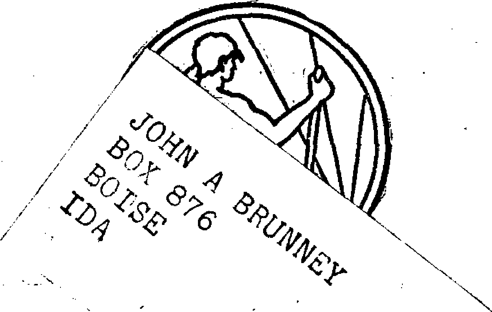
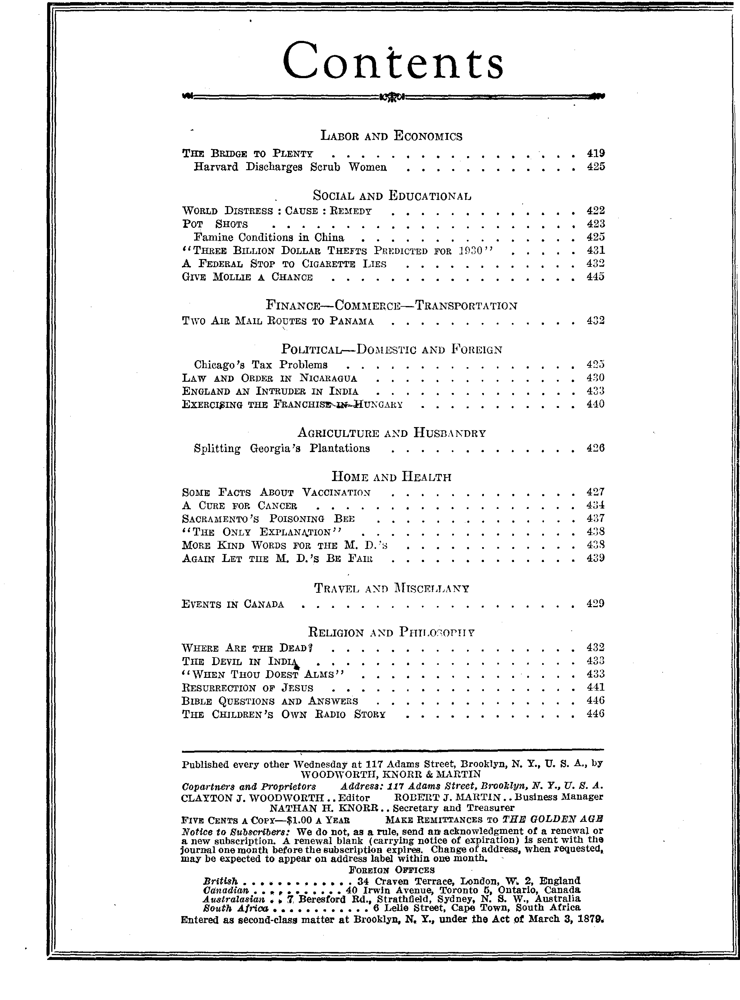

A JOURNAL OF FACT HOPE AND. COURAGE
lllllllllllllllllllllllllllllllllllllt. <11111111111111111
in this issue NATIONAL BROADCAST THE BRIDGE TO PLENTY v ■■ ■
T BILLIONS IN THEFTS MORE ABOUT VACCINATION CAN CANCER BE CURED? EVENTS IN CANADA RESURRECTION OF JESUS radio lecture by Judge Rutherford iiiiiiiiiiiiiiiiiiiiiiiiiimiiiiiiiiiiiiiiiiimiiiiiiintjiiiiiiiiim EVERY OTHER WEDNESDAY . 5c a copy - $ 1.00 a year - Canada & Foreign $ 1.50
Volume XI - No, 275 April 2, 193 0
Brooklyn, N. Y.t Wednesday, April 2, 1930
Volume XI
I'
Number 275
SSSS|;......■■SX
The Bridge to Plenty
THAT is not the real name of the book. Its true name is The Road to Plenty*, but in our judgment no such road exists, nor can exist,
f until Satan has been bound and his whole crowd • have gone down in ruin in Armageddon; nevertheless this book by William T. Foster and Waddill Catchings would do something to help
matters for a time.
The book is an account of an imaginary conversation between various types of men in the smoking room of a Pullman. They consider at length why it is that “even in Massachusetts a fourth of the old people are making hopeless efforts to live decently and comfortably on less than four hundred dollars a year and such meager aid as they get from relatives and ; charity”.
These men marvel that in a country bursting with riches half of the families in the great city of Philadelphia have no bathtubs at all or share them with other families, while four out of five farmhouses have no bathtubs, and nine out of ten of them have no running water, or electric lights, or motor trucks.
They note that the average annual wage of industrial workers is no more than nineteen hundred dollars, which amount “barely covers the needs of a family for food, clothing, shelter, and ordinary sickness: it leaves nothing for extraordinary hard luck, nothing for vacations, insurance, travel, education, or old age”, and they ponder over the curious fact that with conditions like this confronting them “there are no
pains too great for mankind to take to avoid the trouble of thinking”. One of the oddest things about it all is that the average man bitterly resents the suggestion that he should reason his way down to the foundations of Satan’s rotten empire, economic, religious, or political.
One of the speakers points out that “there is
— 1 1 1■■■■■■ " I — !■■■ — । ■ ■ < '■ —>— i - W*. ■.
•Pollak Foundation for Economic Research, Newton, Mass., ?2.00.
something puzzling about a world in which a bumper cotton crop is regarded as a national calamity”, while another remarks that “nearly everybody wants more of the good things of life: I know thousands that are suffering for want of more even in these prosperous times: and we were never so well equipped to produce more. Yet all along the road today we have seen closed factories: and right now millions of workers are without jobs, or on part time, because they have produced too much”.
The Vicious Spirals
The book, of course, has its hero, the man who understands economics. He points out that there are two vicious spirals. In the vicious spiral of inflation, “People rush into the markets and try to buy more goods than the markets afford. Business booms. So manufacturers pay more wages, make more goods, build more equipment, place orders further ahead, and speculate in commodities, all of which causes a further rise in prices, a further expansion of industry, and so on.”
In the vicious spiral of deflation, 'Goods were piling up on the shelves and prices falling.’ “Things went from bad to worse. The movement did not correct itself, because falling prices usually are so discouraging that business men discharge workers, reduce wages, curtail output, postpone additions to plant, buy only from hand to mouth, and keep down their inventories, all of which causes a further fall in consumer income and a further fall in prices. That leads, naturally, to a further retrenchment of business, a further fall in wages and dividends, a further fall in prices, and so on.”
Certain facts are set forth to which all will agree: that “we have abundant production facilities: there is no lack of savings”: “nearly every industry is oversupplied with savings. In some cases the excess capacity is notorious—•
textiles, coal, tires, iron, steel, shoes, cotton, corn, wheat, fruit,” and nearly all industries are now equipped to increase the output of the very goods which the people want.
As one of the speakers put it, "The war taught us that, after it had thrown industry into confusion and taken four million workers away from their jobs, the workers who were left produced enough to supply all the wealth which was sunk at sea and blown up in battle, enough to supply our own Army and Navy and millions of people abroad, and enough more to enable the people at home to enjoy at least as high a standard of living as before the war.”
The hero sums up the situation as follows: "Machines, materials, men, and money in superabundance: hungry mouths to feed and every means of feeding them: willing hands to work and plenty to work with. Now, the question is, why could no immediate means be found of letting this stupendous wealth of machines, materials, men, and money go on with the world’s work?” "We are wasting our savings, whereas it is only in so far as we use savings that we make progress.”
All hands in the party agree that there is no lack of desire for more of the good things of life and that "even in our prosperous country, most of the people would be much better off if they had more wealth”. Let the one who reads this judge for himself whether he could make good use of a greater revenue. All hands also agreed that "we cannot have a plenty unless we create a plenty”.
Why Production is Restricted
Nobody can deny the self-evident proposition that "the only reason the business world does not produce more is because it can not sell more. Lack of markets is the trouble. We never produce a plenty for fear of producing too much”. Nor can anybody deny that the buying of wageearners increases about as rapidly as their incomes.
"The very fact that we cannot get rid of what we make, even in these prosperous years, without persuading the people to mortgage their incomes further and further into the future, seems to show that the flow of money to people who want to buy goods does not keep pace with the flow of the goods.”
The proposition naturally follows "that we cannot hope to use our capital savings or our
labor continuously at
any approach to capacity,
unless individual incomes, week in and week out, are such that- the people buy all the finished products of home industry, or the equivalent in imports, about as rapidly as they are ready for sale”.
In other words, the standard of living of the . people must be raised, if business is to be prosperous, but if savings are to be made, out of which shall come yet further improvements in the standard of living, for an ever increasing number of people, there must be an increase in the volume of money available to consumers. "The question is not whether a rising standard of living requires a growing volume of money, but how the growth is to be brought about at the right rate.” The Federal Reserve System does this important service for the producers, but thegs is no machinery in existence at present for doing it for the consumers.
Advance Payments to Consumers
When wages are paid out to the workers who build factories, railroads and machines, to those who supply tools and materials, and to those who do the transporting, insuring and financing, most of it is paid out and spent by consumers before the facilities under construction are ready to supply the markets with goods. These wages are advance payments, and "these advance payments, paid in anticipation of the sale of goods which have not yet been produced, add to the demand for goods without for the time being adding to the supply of goods”.
It thus follows that "as long as the building of new factories, railroads, telephone lines, and so on, brings about a sufficient expansion of money in circulation, the markets for the products of the old capital facilities are brisk enough to keep business prosperous”. “In order to enable the people to buy the output of our present facilities, we have to build new ones: and then, in order that the people may buy the output of the new ones, we have to build more new ones.”
An illustration of this truth is seen in the development and use of the automobile. "A single industry, non-existent a generation ago, now pays people enough money to enable them to buy the country’s total output of bread and, in addition, the total output of woolen, worsted, and silk goods.” Because of this new industry billions have been invested in automobile plants, and other billions in iron, steel, plate glass, lumber, copper, paint, oil, tires, garages, filling stations, automobile freight cars; and this has helped things all around.
Now comes the point of the book, and that is that when the government spends money for public works it adds to the income of consumers and thus helps where help is most needed. What the government should therefore do is to put “more money into consumers’ hands when business is falling off, and less money when inflation is under way”. The government would thus, by its acts, in paying off government debts, building public works, etc., check both of the vicious spirals of inflation and deflation, and keep things running more smoothly. “A decline of business, however initiated, cannot develop into a depression if consumer income is sufficiently sustained.” “If the new policy succeeded, it would necessitate constant increases in the volume of money in circulation: but the time would come when no further increases would be possible, without abandoning either the gold standard or the present gold reserve ratio.”
The plan proposed in The Road to Plenty “calls for a separate Federal Board, which shall itself gather and measure the data best adapted to show the adequacy of the flow of consumer income, using, however, for its own purposes, the wealth of data gathered by other agencies. Having thus collected the needed information, the Board shall advise thg Government how to use it as a guide in all fiscal matters. The Board itself, guided in the same way, shall determine when certain expenditures are to be made, which already have been provided for by Congress, under a policy of long-range planning of public works. Thus the Board, both through its own acts and its published reason for its acts, will provide private business with the needed leadership”. “Public works built in that way might actually cost the country nothing: for if they were not built, the country might lose more than the cost, through the idleness of men and of capital savings.” “When production is far below capacity, and many workers are unemployed because demand for their products is insufficient, it is far better for the Gov-ernment to spend money on public works than to use the money to pay debts*”
men of tender hearts, and that they are really in earnegt in trying to find a way out of the present economic impasse, is very plain from the following touching soliloquy, which we quote in full. It may be added that others have been touched by this book, and that some of its suggestions seem to have come to the favorable attention of President Hoover. References to the opinions of Foster and Catchings are now quite common in the metropolitan press.
Through the dusty window, the Little Gray Man saw a line of trudging workers, stretching from the factory gates all the way down the ugly street. Another day’s work done, he thought, and tomorrow there will be another, and the next day another. And beyond that, what? Endless anxiety, even for most of those who, by a special good fortune which they dare not hope for, actually do hold their jobs. How many of them, he wondered, if they had the choice to make tonight, would care to live over a day like the one now ending ? How many of them, if they knew what the coming days had in store for them, would have the heart to go on ?
Through the city the train flew: past row upon row of dreary factory dwellings: and on and on into the country.
Down through a field, toward a dilapidated barn and a still more dilapidated house, came a farmer, leading a pair of horses. *'The plowman homeward plods his weary way,” thought the Gray Man.
Yes, and truly "leaves the world to darkness and to me.”
For some time, clouds had been piling up in the west.. Now the Gray Man observed the sky was as murky as the factory dwellings, as murky, almost, as his own spirit.
Soon the rain began to beat on the windows. He watched the drops as they gathered in little streams, wavered their way down the dirty panes, and were shaken off into space. Like himself—appearing suddenly out of the unknown, following for a moment an aimless course, buffeted hither and thither, and then, suddenly, off again into the unknown. What was it all about? What did it all matter? What did anything matter?
Useless, he thought, for me to allow myself to be crushed under the burdens of thousands upon thousands. The task is far beyond my poor powers. What I cannot help, I must forget.
So he stood up, summoned his old-time good cheer, threw back his head and shook himself, as if to cast off the burdens which bore him down. "Yes,” he decided firmly, "I will comfort myself at least a
A Touching Soliloquy
That the authors of The Road to Plenty are little, as others do, for they are right: I have set my life upon a hopeless quest. ’ ’
But then, of a sudden, right before him appeared the eyes of Mary Marden, lustrous, perplexed, pleading eyes, just.as that very morning they had followed him about the dingy chamber where she lay, with scarcely strength enough to turn her head.
At once, he knew that it was no use. He dropped back, limp, upon the seat. Thousands and thousands of sufferers, massed in a table of statistics—that he might forget. But one penniless, widowed mother, her new-born babe at her side, bereft, beseeching—that he could not forget.
Hard as he had tried to pull himself together, in the culmination of a life of disappointments, one frail human being, her eyes appealing straight to his heart,
, now overwhelmed him. His throat choking, his spirit quite, quite broken, he looked out across the wide meadows.
And it was more than rain that blurred the distant lights.
What a blessing the justice and truth and righteousness and mercy of God’s kingdom ig bound to be to men who can write like that, and can write it because they really feel it in their hearts! The only books worth reading are visionary books, and The Road to Plenty is such a book.
rpiMELY indeed are those words as a title for the address of a speaker whom the radio audience of America delights to hear. And it is a pleasure to announce that such is the subject chosen by Judge Rutherford, president of the International Bible Students Association, for Sunday morning, April 27.
On that day he will speak at Oakland, California, over two hookups, one for the East and one for the West.
For Eastern and Central Territory
Direct from Oakland through the following stations regularly associated in the WATCH
TOWER network: Bangor, Maine ..................WLBZ
Boston, Massachusetts ..........WLOE
Providence, Rhode Island........WLSI
New York, New York .......... WBBR
New York, New York .......... WMCA
Poughkeepsie, New’ York........WOKO
Syracuse, New York............WFBL
Paterson, New Jersey ..........WODA
Harrisburg, Pennsylvania ........ WHP
Philadelphia, Pennsylvania........WIP
Pittsburgh, Pennsylvania ........ KQV
Scranton, Pennsylvania..........WGBI
Washington, District of Columbia WMAL Norfolk, Virginia .............. WTAR
Petersburg, Virginia ............WLBG
Charlotte, North Carolina........WBT
Raleigh, North Carolina........WPTF
Hamilton, Ontario ........... CKOC
Cleveland, Ohio ................ WHK
•Every reader of The Golden Age is cordially invited to join in giving the widest possible publicity to this unique opportunity to hear Judge Rutherford. —Editor.
Columbus, Ohio ................ WCATT
Youngstown, Ohio..............WKBN
Wheeling, West Virginia ...... WWVA
Fort Wayne, Indiana .......... WO WO
Indianapolis, Indiana .......... WKBF
Evansville, Indiana ............ WGBF
Hopkinsville, Kentucky ..........WFIW
Chicago, Illinois................WCFL
Chicago, Illinois................WORD
St. Louis, Missouri ............ KMOX
St. Joseph, Missouri............ KFEQ
Muscatine, Iowa................ KTNT
Lincoln, Nebraska .............. KF AB
Sioux Falls, South Dakota ...... KSOO
Over any of the above stations the sixtyminute program, including the address of Judge Rutherford, will be heard according to the following time schedule:
Eastern Daylight Saving Time 10 to 11 AM
Eastern Standard Time......9 to 10 AM
Central Daylight Saving Time 9 to 10 AM
Central Standard Time ...... 8 to 9 AM
For Pacific Coast and Mountain Territory
A second presentation of the same sixtyminute program will be broadcast direct from Oakland through Station KFWM (Oakland) and a special network including stations along the coast from San Diego to Vancouver, also at Salt Lake City and Denver. This second presentation will be audible according to the following schedule:
Pacific Standard Time......10 to 11 AM
Mountain Standard Time .... 11 to 12 AM
It is expected that the full list of stations for the Pacific coast and Mountain territory can be announced in our next issue.
Huge Bricks for Paving
S A result of experiments made at Pennsylvania State College it is likely that, before long, paving bricks will be made which will be '' twenty feet long, five feet wide, and thick ! enough that they can be laid for pavement at once.
Plain Speech by Louisville “Tinies”
N AN editorial the Louisville Times says with great plainness of speech: “Civilization has been for a long time a gun-muzzle civilization, Christianity nominal, bloodshed and despoilment part of the routine of history making.” That being true, and it is true, then what about the birds that have the nerve to call the whole aggregation ‘Christ’s kingdom’? r i
Four Bottles of Beer
N A home in California prohibition officers found four bottles of beer. The matron of the home, a young woman about to become a mother, was arrested, tried, convicted, and sentenced to prison. Her child was born in a cell, and when it was born it was dead. If this is civilization, what is next?
Why Youths Commit Crime
WRITER in the New York Times points out that twenty-five million clerks, bookkeepers, factory hands, mechanics and day laborers average $25 a week, and that while this is a subsistence wage it precludes marriage. Four-fifths of the crimes in the United States are committed by youths between the ages of eighteen and twenty-five, because of dissatisfaction with the conditions in which they find themselves.
Scranton’s Crooked Rulers
COURAGEOUS grand jury at Scranton has indicted the sheriff of the county, four chiefs of police, two ex-chiefs of police, a former civil service commissioner, a man who was twice mayor of the city, and sixty-nine others of like honor and integrity, for conspiracy in connection with a slot machine ring. We present on this page a photograph of the officials in Scranton and vicinity who are now open to suspicion of things that are even worse.
Voting in Kenya Colony
HE Hindus and Negroes in the British colony of Kenya, East Africa, are asking that, when they have met the education and property tests which may be fixed by law, they shall have the same rights to vote in Kenya as are now enjoyed by the whites. Could they, in simple justice, ask for less?
Russia’s New Calendar
USSIA’S new calendar, expected to be put in operation soon, will date from Novem
ber 7, 1917, the date of the Bolshevist revolution, and will have six weeks of five davs each in every month. Saturdays and Sundays will be eliminated. The private practice of law in Russia has been eliminated.
New York City’s Waning Forests
HE last saw mill that will ever operate in Queens Borough, New York city, is now
engaged in cutting up one of the few remaining forests within the city limits. There are still some good forests on Staten Island, in one of the principal ones of which is the site of radio station WBBR.
Australia’s Wild Camels
USTRALIA, thinking it wTould be fun to shoot them, introduced rabbits, years ago.
They multiplied so fast as to become a pest, and now they have to be shot to keep them down. More recently camels were introduced, and then turned loose when automobiles took their place. Now the camels too are multiplying with great rapidity, and as they have gone wild it has become necessary to organize squads to shoot them also.
A Funny One on the Scientists
‘DINOSAUR’S skeleton’ was discovered near
Tetuan, Morocco, and a group of Spanish scientists solemnly descended upon it and began to make the usual calculations as to how many hundreds of thousands of years ago it had lived. They got along very well with the identification of the various parts until they finally discovered that it was a haymaking machine made in Chicago which a Spanish farmer had abandoned during the Riff war and which had later been covered by a landslide caused by heavy rains.
Colorings of Lobsters
ERHAPS due to their differing foods, lobsters have been found which have been of the following colorings: pure white, jet black, dark green, bright blue, gray, red, reddish-yellow, and cream. There are also spotted (or calico) lobsters, exhibiting a variety of colorings, in patterns.
Persecution of Jews in Russia
OT only have many synagogues been taken away from Jews in Russia and converted
into Communist clubs and workmen’s dwellings, but burial grounds have been seized, rabbis have been imprisoned and exiled, the teaching of Hebrew has been forbidden, and the teaching of even two children to say their prayers may result in imprisonment for whoever does it.
Instruction for the Isolated
PRAISEWORTHY step taken by the Office of Education of the Department of the
Interior is to provide education by correspondence for such children as are now too remote from any school to be able to attend. These will include children in lighthouses and on islands remote from the mainland, as well as those that are disabled.
Hurrah for Konetsky!
OU may not know who Konefsky is. He is a blind boy, fifteen years of age, who entered America less than four years ago, not knowing any English at the time. He has just completed an eight-year course in three years and four months and now speaks English so pure that he was chosen to make the valedictory address of his class, most of whom have their sight.
Russellville's Astonishing Bootlegger
T RUSSELLVILLE, Arkansas, just before Christmas, a number of citizens were approached with the question, “Say, how would you like to buy a quart of corn?” A justice of the peace and several church members thought they would appreciate such an investment, and when they got home found that they had purchased corn, shelled corn at that, not even ground into meal, and had paid $2 a quart for it. The purchasers are still looking for the alleged bootlegger. They wish to explain some things to him.
Ancient Wall of Jericho Found
N ANCIENT wall, twenty feet high, said to be the most magnificent yet discovered in Palestine, has recently been uncovered at Jericho and is believed by some to be part of the wall miraculously overthrown in the days of Joshua. About 165 feet of the wall has been unearthed.
Peter Better Fixed Now
HE fact that a Roman Catholic archbishop in the Philippines was able to pay $1,500,000
for the property of the Mindoro Sugar Company suggests that times have improved somewhat for Peter since he said to the poor cripple, “Silver and gold have I none; but such as I have give I thee.”
Britain's Sunday Schools
N THE last twenty years the Anglican church in England has suffered a decrease of 1,133,
766 Sunday scholars; the Wesleyans have lost 177,797, the Baptists have lost 68,096, and the Congregationalists, 174,615. Dr. Douglas Brown, president of the Baptist Union of Great Britain and Ireland, has declared that at the present rate the church would be as dead as the dodo • in another ten years.
The Reformation of Krupps
RUPPS, which at one time filled the world with terror, is now giving close attention to market gardening and building acres of glass houses with the idea of supplying the whole of industrial Germany with flowers, fruit and vegetables, and every kind of industrial instrument, including sewing machines and gramophone needles. Germany has learned that war does not pay.
The Use of Antitoxin
HE Army Medical Journal, May 15, 1923, said: “Medical opinion generally is rapidly
coming over to the side of believing it advisable to eliminate the prophylactic use of antitoxin.” In view of the deaths at Bundaberg and Dallas this seems reasonable, and yet we find that the Health Department of New York city has large and expensive posters about the city pleading with parents to have the doctors do, not without remuneration, what the Army Medical Journal thinks inadvisable. And the public pays for the posters.
QOLDEN AQE
April 2, 1930 ■
L i-t I
Harvard Discharges Scrub Women
N THE twenty-first of last December, four days before the day popularly called Christ
mas, twenty scrub women, some of whom had been over thirty years on the job, were summarily discharged because the State Minimum Wage Commission had ruled that their wages thereafter must be increased from $10.50 a week to $11.10 a week. Harvard is the recipient of gifts of millions of dollars every year.
The Cost of Poorhouses
HE average cost of caring for each of the 85,889 persons now in poorhouses in the
United States is $334.64. A bill has been introduced in Congress which would provide federal aid on a 50-50 basis to any state enacting old age pension legislation. At present the United States and China are the only large nations that do not have some form of national old age pension legislation. Wonder if the supreme court of China would declare old age pension legislation unconstitutional.
The Dentifrice Racket
NDER this name The New Republic publishes an article giving Ora-Noid, Semafor, Orphos, Pepsodent, Pebeco, Listerine, Mu-Sol-Dent, X-It, Miracle Pyorrhea Powder, Mucol, Ipana, Tartaroff and Forhan’s a free advertisement which they will remember but probably not appreciate. Most dentifrices claiming to cure pyorrhea consist of baking soda and borax, sold under fancy names for prices ample to pay for the advertising and profits therefrom.
Chicago’s Tax Problems
T SEEMS that the Big Business men of
Chicago succeeded by some hook or crook in
getting $400,000,000 in valuations cut out of the assessments on property in the Loop. The mayor did not think that was fair, so he vetoed the city budget. The taxpayers on the outskirts did not think it was fair either, and are in an angry mood, but Big Business has had its way, for the present, and another intolerable burden has been piled on the backs of those least able to bear it. Chicago is at present virtually in the hands of anarchists masquerading under the high-toned name of “Citizens’ Committee”, self-appointed. The banks, instead of standing by the city in its plight, are refusing funds and standing by the anarchists.
Louisville’s Hard-boiled Magistrate
GUIS VILLE’S hard-boiled magistrate, Albert Nisbet, has been up for trial for embezzling the church’s funds. He is now blind. His daughter claims that the pastor of the church knew of the embezzlements and that both he and the church profited while there were profits to divide. Meantime, the pastor adroitly says that Mr. Nisbet was not “authorized” to abstract the church’s funds. Probably not. Permission and authorization are different words.
Paid a Dead Man Six Years
MAN in Somerville, N. J., was on the pension pay roll of New York city at the time of his death, in April, 1920; but he forgot to notify the bookkeeper or somebody else that he had passed out, so his monthly check came along regularly for the next six years. A man by the name of Ahern found the checks perfectly good, and now, after getting $4,054 in that way, he has the embarrassment of having to explain why he forgot to say something about it.
Chiropractors in New York State
TXTHEN the World War was over, the United ’ ’ States government sent 328 ex-service men to Davenport, Iowa, to train for a profession wherein they could make a livelihood, and now if one of those men undertakes to practice in New York state something which is perfectly legal elsewhere, and which should be legal everywhere, he is in danger of being imprisoned as a felon. Looks like medical liberty with a minus sign before it.
Famine Conditions in China
WO million have already starved to death in Shensi province, China, and two million
more will starve before June. In some instances the survivors continue to live by eating the bodies of their fellows who have already starved or frozen to death. In places nothing is left of houses but one room, the rest having been used for firewood because of the bitter weather, the worst in forty years. Coal is $118 a ton; charcoal $190 a ton. In one village of 800 inhabitants where the starving people had had no grain food for three months, the soldiery distributed some small loaves. The sight of real food drove the people insane, and the soldiers were forced to beat them off with whips before any distribution of the food was possible.

Liberty in Indianapolis
HE non-union Real Silk Hosiery mills of Indianapolis discharged seventeen workers for their union activities. The workers then organized a dance and sold tickets. The Real Silk Hosiery mills posted signs at the mills stating that the dance would be called off. After the sign was posted the police of Indianapolis banned the dance. Persons familiar with the facts are wondering at just what point of time Indianapolis made its escape from the land of the free and the home of the brave, and disengaged itself from the provisions of the Constitution regarding freedom of assemblage.
Shortridge Would Know
USINESS of investigating lobbying in Washington. Sugar lobby up for study, especially W. H. Baldwin, who gets $2,500 a month, part of it from a New York sugar broker, H. H. Pike. Mr. Pike’s files are examined and disclose a memorandum saying, “Shortridge, Cal. Not influential. C. & H. (California and Hawaiian Sugar Company) will certainly tell Shortridge what to do.” If that information is correct, how would it do to let Shortridge out and openly elect the California and Hawaiian Sugar Company to represent the great state of California in the Senate ? At the very least, we would then know who are governing, and who to blame for things.
Splitting Georgia Plantations
olonel J. L. Evans, Ashburn, Ga., has split his five-thousand-acre farm into twenty farms, each equipped with modem machinery and started out with a good supply of farm animals of all kinds. Mr. Evans says of this plan: “Whore once these farmers lay by when the cotton was picked, they are now handling the poultry, the livestock and farm products. When the cotton and other crops come on the produce season is over.” Mr. Evans is hopeful to encourage other plantation owners to divide their lands and create a class of farm owners in the South that can become buyers of the nation’s wares instead of being, as they have been, half-idle and hopeless tenants, living from hand to mouth. He thinks the old tenant plantation system has had its day.
No More Shaves in Byers
BYERS (Kansas) Methodist pastor asks the men of the town to stop getting shaved and to place their barber costs in the missionary funds. Good idea! A still better one is to get their religion over the radio, and then the preacher can go into the barber business, which by that time will have been vacated. The only unsolved problem remaining is, What shall we do with the poor barber that first loses his job under the “no shave” deal? The chances are he would make a better preacher than the other one, so we put him back in the dominie’s job, and the problem is solved.
Los Angeles Getting Religious
N ADVERTISEMENT in the Los Angeles Times shows that in St. Paul’s Presbyterian
church of that city the Rev. Dr. G. A. Briegleb has been preaching on “Jack Horner’s Christmas Pie”; “Humpty Dumpty Sat on a Wall”; ‘‘Baa, Baa, Black Sheep”; “Old King Cole,” and other subjects which he thought would be up to the level of his audience and not beyond his own powers. It is wonderful how religious Los Angeles is getting to be. As George Kendall is alleged to have said at the convention in Allegheny, “Isn’t it wonderful? We are right back here where we were forty years ago.” Yea, verily!
Household Economics in St. Louis
UNDER the head of “Household Economics” the St. Louis Post Dispatch says: “When stewing tomatoes, rhubarb, apricots, or onions, look around the kitchen for the aluminum saucepan that needs brightening and use it to cook any one of these articles. All work and effort on your part towards a shiny kettle will be over.” The Post Dispatch forgot to add that if every time you cook such foods you thus stew the discolorations off your pots and subsequently eat them, not only will you shortly cease all work and effort to get shiny kettles, but you will at length cease all work and effort of every kind. What remains to be done will be done first by the doctor, who will not know what to do, and then by the undertaker, who will. And thus the aluminum returns to the earth as it was.
Some Facts About Vaccination
The facts In this article are taken from The Facts Against Compulsory Vaccination ($1.00), by H. B. Anderson, pub-llshed by Citizens Medical Reference Bureau, 1860 Broadway, New York, N. Y.
rpHEBE are no compulsory vaccination laws in Maine, Vermont, West Virginia, Florida,
Alabama, Mississippi, Louisiana, Tennessee,
Indiana, Illinois, Michigan, Wisconsin, or in any of the states west of the Mississippi river, excepting only New Mexico and Oregon, and in the latter state the requirement is optional with
I the local authorities. The states of Maine, North i Dakota, Arizona and California, which were once 1 . * z
in the vaccination column, have stepped out of it. Massachusetts has abolished the compulsory vaccination of infants.
England and Australia have repudiated compulsory vaccination, and Holland has suspended it for a year on account of the prevalence of cases of encephalitis following it. Dr. William Brady, syndicate writer on health, says that he should vote a positive “No” on any proposition of compulsory vaccination for any group of people or even for all the people.
American Medicine, in an editorial, March, 1914, speaking about the reluctance to vaccination, said:
This attitude is not confined to laymen but is taken by those leading men in the medical profession who postpone vaccination of their own kith and kin until the last moment. Two world renowned men have confessed to us that they have had their children vaccinated only in obedience to public opinion in and out of the profession.
The London Lancet, in an editorial, January, 1927, made the following statement:
Vaccination at the age of six months inflicts an infectious disease on the child at a time when its digestive mechanism is being rapidly modified, and many reasonable people, although convinced that vaccination will prevent smallpox, think that the advantages of immunity do not outweigh the disadvantages of its production.
The Journal of the Michigan State Medical Society, August, 1928, under the head of “The Economic Side of Immunization or Treatment” had the following highly interesting paragraph:
When the 100,000 people bom every year in Michigan are vaccinated against smallpox at birth, the income to the physicians would approximate $200,000. The 500 cases of smallpox that occur every year, treated at an average of $50.00 per case, bring physicians $25,000. Thus the physicians, by adopting the practice of vaccination at birth, would increase their income by nearly $200,000.
The Journal of the American Medical Asso-
427
ciation, November, 1922, contains a declaration by Dr. W. S. Rankin, while secretary of the North Carolina state board of health, in which he unburdened himself of the following:
Last year we inoculated 70,000 persons against typhoid fever, and 1,000 children between 6 and 12 years of age against diphtheria. The county commissioner paid the local practitioners 25 cents for each complete inoculation and that was $20,000 which went to the profession last year which otherwise would not have been received. The work of the medical profession with the state board of health does not stop when that $20,000 is paid. It goes on. In the dispensaries which were conducted in Union County, North Carolina, with 35,000 people, the physicians vaccinated 10,000 people in a campaign of five weeks. That was $2,500 paid to twenty physicians—only $125 each, but think of the effect on the business of the profession in keeping up that work. It goes on.
Speaking of the tendency of the unscrupulous to foist anything upon the public in the way of medicine (or vaccines) that the public can be made to pay for, American Medicine said editorially :
Official positions in medical bodies are sought and at other times are appropriated by not too nice strategy. Medical journals are subsidized and new ones are published. A number of makers pay a regular stipend secretly to complaisant doctors here and there over the country, who, in return, are expected to read “useful” papers and at every possible turn to uphold the wares of the benefactor. Thus it comes that therapeutics has reached its present low estate.
Dr. Frederick R. Green, former secretary, Council on Health and Public Instruction, American Medical Association, in an address before the Utah State Medical Association, September 30,1914, is quoted as saying:
Another error into which we have fallen as a profession is the tendency to regard the medical profession as a divinely authorized class, whose sacred and distinctive function is the protection of the people either with or without their consent. It is difficult to understand on what rational basis such a belief can rest in a scientific profession like ours.
The inconsistencies in some states and localities, where one set of laws interferes with another, were brought out by a Doctor Godfrey at a conference of health officers at Lansing, Michigan, December 12, 1923. Doctor Godfrey was reported as having said: '
In our city unvaccinated children, even though they are not exposed to contagious disease, can not come to
1
«■ X
school until they are vaccinated. Unvaccinated children are turned over to the school board, and excluded from school, and then as soon as the records show they are not in attendance at school they are arrested for non-attendance. In other words, we get them going and coming.
On April 22,1926, 130 members of the Dallas Chamber of Commerce canceled their trips to Mexico rather than submit to vaccination; but the same dispatch that revealed this fact revealed another one still more interesting, reading as follows:
Nearly 100 American medical men who were expected in Mexico at the end of April after a conference in Dallas have fared better than the commerce body. Arrangements have been made for allowing them to enter the republic without vaccination.
Dr. John P. Koehler, commissioner of health, Milwaukee, Wisconsin, in an article in the Wisconsin Medical Journal, November, 1925, outlines how a campaign in favor of vaccination is worked up. He said:
Since people can not be vaccinated against their will, the biggest job of a health department has always been, and always will be, to persuade the unprotected people to get vaccinated. This we attempted to do in three ways: first, by education; second, by fright; and third, by pressure. We dislike very much to mention fright and pressure, yet they accomplish more than education because they work faster than education, which is normally a slow process.
In England smallpox mortality has greatly declined. In the ten years from 1872 to 1881, inclusive, 85.5 percent of the people of England were vaccinated and the number of deaths from smallpox was 37,082; but in the last ten years for which records are available, namely, 1912 to 1921, only 43.4 percent of the people were vaccinated and the total deaths from smallpox were only 122. In the United States, which is largely unvaccinated, the average number of deaths per year from smallpox for the past twenty years is only 313, which, in a population of 120,000,000, is as near to nothing as could reasonably be expected.
Japan has had compulsory vaccination since 1874, and yet in ten plague years since that time has had 77,500 deaths from smallpox. Italy has been vaccinated and revaccinated repeatedly, yet in 1919 it had 18,213 fatalities from smallpox, as against 358 smallpox fatalities the same year in the generally unvaccinated United States of America. In the Philippine Islands, in the ten years from 1911 to 1920, inclusive, there were 24,436,889 vaccinations and a total of '
XX
75,339 deaths from smallpox. In Australia, where only 30 percent of the people are vaccinated, there were only six deaths from smallpox in the fifteen years from 1909 to 1923, inclusive. These figures ought to show, and do show, that improved sanitation is what helps the smallpox record.
It seems that the real facts about smallpox are covered up by the advice given to physicians to report as smallpox all cases of so-called Cuban itch, Philippine itch, alastrim and seven other diseases of various names. In making diagnosis it is common for physicians to give some other name to the malady if it is found that the patient has been vaccinated. This is done so that vaccination will not get a bad name.
The department of health of New York city has for sale nineteen kinds of vaccines and serums. The Massachusetts department of health has only nine of these, but can get the others when they are wanted. A surgeon of the United States public health service proposed a schedule of seventeen trips to a doctor’s office to provide immunization against four diseases. Several hundred trips would be necessary to immunize against all diseases now known or which it is hoped to find. A trip every day, as long as able to make it, is in the offing.
People have been inoculated with extracts of newspapers, dandruff, blonde hair, brunette hair and house dust. You can get almost anything in the way of a serum shot into you if you are willing to pay for it and do not particularly care what happens. Horse dung extract and a serum made from Le Page’s liquid glue were considered by a learned committee of doctors, but “in consideration of their indefinite composition” they were declared "unacceptable for new and non-official remedies”; and so say we all.
Doctor Charles Armstrong, in a work published in 1927, refers to 98 cases of lockjaw following vaccination "over a period of several years”. There have been such deaths in recent years in Wilkes-Barre, York, Allentown, and Peekskill, ten cases in Pittsburgh, and fifty cases in New York state in 1914. Lethargic encephalitis (sleeping sickness) has become a new problem in the world, and the number of cases of encephalitis traceable to vaccination is on the increase. Physicians admit that vaccination may light up or transmit various diseases, including leprosy, and foot-and-mouth disease. No physician can be absolutely certain that any batch of vaccine virus is free from impurities, and no physician can guarantee that vaccination will bring immunity from smallpox.
Events in Canada By Our Canadian Correspondent
NE by one the provinces of Canada are adopting an Old Age Pension Act on the basis that the expenditure in connection therewith will be shared equally by the Dominion government and the province concerned. There are now 13,394 old age pensioners in Canada, and $3,389,089 has been spent on pensions since the passing of the federal act two years ago.
It is instructive to look back on criticism of the measure heard when it was laid before parliament. Some contended it would never work “because the provinces would refuse to cooperate’. It was “inadequate because no one could Eve on $20 a month’. Finally, it was “anti-social because it would discourage thrift and pauperize the aged’. These were the principal arguments, and they were used.
Time has shown how pointless they all were. The pensions law is working smoothly. It has been accepted by five of the nine provinces, the five having two-thirds of the country’s population. The pension of $20 a month, while not a munificent income, has brightened the lives of thousands of aged citizens, and relieved them of dependence on grudging charity. And no one complains now that the prospect of getting $20 a month from the state at the age of seventy will make people idle or improvident.
The pensions law is a credit to Canada, and will in due course have effect in all the provinces. Stupid objections to it are already forgotten, and are worth recalling only as an example of the sort of nonsense reactionary people talk whenever any faintly radical economic measure is proposed.
Smashed Stocks and Unemployment
The recent collapse of the New York stock market, together with the fact that this year’s crop in Western Canada will be but half of last year’s, is being felt in this country in no uncertain way, and is particularly reflected in the large increase of unemployment through the closing down of many factories. A conference of financial, industrial and labor leaders is being urged to deal with the situation, and in this connection the following news item appeared in the Mail and Empire, of Toronto:
A letter to Premier Mackenzie King urging that he call a conference of financial, industrial and labor leaders to consider “the serious unemployment condition throughout Canada,’’ has been sent by A. R. Mosher, president of the all-Canadian Congress of Labor and the Canadian Brotherhood of Railway Employes. In a statement,issued to-night Mr. Mosher referred to a conference held in Winnipeg between representatives of provincial and municipal governments and of organized labor for the purpose of dealing with the unemployment situation.
Mr. Mosher stated that in his letter to Premier King he called attention to the fact that, from the time it was ascertained that the wlleat crop would be a partial failure, the railways had made immense reductions in staff, and their example was being followed by other industries which were similarly affected, with the result that buying power had been considerably diminished. A widespread business depression was threatened. Seasonal unemployment had appeared at an unusually early period, and the stock market collapse had, in his opinion, exerted an adverse effect fully as great in proportion to population in Canada as in the United States.
It was of the utmost importance, Mr. Mosher’s letter stated, that public confidence should be restored by a survey of business conditions and that plans be drawn up for the provision of employment by both public and private agencies. Actual unemployment and the fear that it would spread to great proportions had curtailed public expenditures, creating a vicious circle which might work extreme havoc in Canadian industry.
The Winnipeg conference brought out the fact, Mr. Mosher contended, that unemployment in the west was greater than at any period in the previous five years, and regretted the attitude of the federal government, which apparently considered that unemployment was a matter for provincial and municipal authorities to deal with. Mr. Mosher took the ground that, in a time of crisis, technicalities of jurisdiction should not prevent the rallying of the constructive forces of the country, and that the federal government alone could give the leadership which the situation demands.
Pending the holding of the conference which it proposed, Mr. Mosher’s letter suggested to the prime minister that the railways be asked by the government to carry on as much construction work as possible, with a view to providing employment, and retaining the maximum number of employes in the service.
Mr. Mosher’s statement added that the prime minister has taken up his letter with the minister of finance and the minister of labor, and had assured him that his representations would receive every consideration.
Why Wheat Is Held Back
The wheat pool head reveals that the world import requirements of wheat are 770,000,000 bushels and that the export surplus is only 708,000,000, and gives this fact as the reason for the pool's confidence in holding its wheat for higher prices.
In the Family Herald and Weekly Star appears the following editorial concerning the situation :
General business would be making a mistake if it took seriously the hue and cry being raised by some of the shipping interests against the wheat pool, because grain is not being rushed overseas, to suit the convenience of transportation companies.
It is perfectly true that many stockholders may be trembling over the possibility of deferred or reduced dividends, because vessels or freight-cars are not operating to their full capacity, but there may be more important interests than theirs to serve.
The whole is greater than its part, and that the
Dominion at large should be made to prosper by the receipt and subsequent expenditure of large sums of money is more important than that the fortunate peo-
pie, who live wholly or in part upon the profits their investments, should have rather less money spend, just at the moment. -
of to
of
Last year produced a wonderful record crop wheat the marketing of which gave financial prosperity to the whole Dominion.
This year there Has been a world crop failure. Forecasts are somewhat speculative with regard to the Argentine and Australian harvests, but it is expected that Australia will garner little more than half of last year’s crop, while the Argentine will be short of its splendid crop of last year by at least 100,000,000 bushels. Canada expects her crop will amount to little more than half of her great crop of 1928.
Last year’s crop brought us $"470,000,000 for inspected wheat. If the Pool were to sell its hidings at the present prices it would mean a loss to the grain growers of the west in purchasing power close upon $175,000,000. This would have its repercussions on Eastern Canada.
Can any sensible business man claim that the management of the wheat pool is acting short-sightedly in holding large stocks for the present?
The August shipments of wheat and flour made up a total of 13,000,000 bushels, which is some 2,000,000 bushels more than the usual average, although it is quite true that in 1928 under an abnormal pressure of overplus grain 30,000,000 bushels were sold.
No doubt eager buyers, banking upon the small supplies everywhere, would gladly have taken 30,000,000 bushels last August—at last year’s prices of from a dollar to a dollar-ten per bushel!
The prices actually realized for what was sold ranged from around $1.50 to $1.60 per bushel.
There could be no sound reason for selling our wheat in adiurry at this juncture for what it would bring, and thus losing the country the incoming and circulation of from $60,000,000 to $100,000,000.
In times like the present, such a sum might make the difference between prosperity and anxiety to the general trade of the country. There can be no controverting the statement of the General Manager of the Wheat Pool, that the world situation justifies a higher rate than that which rules at present.
Why should Canadian farmers fail to profit by the existing situation, as would men engaged in any other line of business if facing similar conditions?
General Smedley D. Butler, of the Marine
Corps, is alleged by Pittsburgh papers to have given the following account of the manner in which an election in Nicaragua was conducted under his supervision. The speech was given at a dinner of the Pittsburgh Builders'
Exchange.
The fellow we had in there nobody liked. But he was a useful fellow—to us. So we had to keep him in.
How to keep him was the problem election laws and found that the polls had to be open (a sufficient length of time). At least that’s the way we translated it—and that a voter had to register to be eligible to vote. The district was then canvassed, and 400 were found who would vote for the proper candidate. Notice was given of opening the polls five
hi
We looked up the
Inutes beforehand, the 400 voters were assembled in a line, and when they had voted, in about two hours, the polls were closed. The other citizens had not registered and therefore were ineligible to vote.
“Three Billion Dollar Thefts Predicted for 1930 Boys and Girls Steal Vast Amount”
HE above is the sub j ect of an article appearing in Lookout, called a "magazine of Christian education’-’, and published December -29, 1929, by The Standard Publishing Co., of Cincinnati, Ohio, and distributed by the Christian Church to their Sunday school pupils throughout the United States (so I am told). • One of them was handed to me by a man whom I was canvassing a day or two ago, with the thought, I suppose, that it would be a help to me in the proclaiming of the Kingdom message; and it surely did serve me, and is continuing to serve me, in proving by their own lips (Luke 19: 22) just what the Bible Students have been telling them for a long time, that is, that the churches have proved a failure as a teacher of morals, and that the time has now come for the world to know it.
Among the interesting statements made is one to the effect that in a school of forty-six pupils every one was found to be dishonest in an examination at the beginning of the school term, and that after spending 200 hours during the term in teaching morality again a test was given and the forty-six pupils “proved one-hundred-percent honest, showing that morality can be taught and will prove effective in producing an honest law-abiding young citizenry. The article states that the above vast amount will be stolen by the boys and girls of America during 1930, and almost all of them under twenty-five years of age. Then it asks, “Who is to blame for this great juvenile delinquency? Who has failed? The home? Yes. The state? Yes. But the major blame for the present crime wave must be borne by the church. [We knew it long ago.] The church assumed the responsibility for the spiritual and moral training of the children of this country when religion was removed from the curriculum of the public schools, but the church has failed as a moral teacher. Why has it failed? The answer is clear. The church has never taken its educational work seriously.” And then the author goes on to state a number of facts, as follows:
1. “Millions of children unreached by the educational program of any church.
2. “A low level of ethical ideas in selected samples of American youth.
3. “A high susceptibility to immoral conduct among typical groups of American youth.
By C. D. Ebie {Indiana)
4. “A rapid increase in juvenile delinquency.
5. “A rapidly spreading emphasis on agnostic and materialistic views of reality which tend to eliminate a personal God from the life of the rising generation.
6. “An army of untrained unsupervised voluntary religious teachers attempting to teach morality.
7. “Commercialized amusements and the influence of vividly portrayed criminal conduct in the daily press and the movie screens.”
And then, after again accepting the blame for the low state of morality in our American youth, the author summarizes by asking, “When will the crime wave end, and how long will it last?” He answers, “Until society builds a system of moral and religious schools to match the public schools of our land”; and again, in making his New Year resolutions, the author states, “I dedicate my intellect and my heart, my time and my talents, to the teaching service of my church, knowing that the kingdom of heaven can only be ushered in by teaching our boys and girls to do justly, love mercy and walk humbly before God.”
You will note that this D. D. still thinks that it will be possible for them to clothe the earth with their moral achievements and then the Kingdom wilb be permitted to come. What audacity, after admitting such tremendous failure, still expecting another chance! They (the D. D.’s) should not say anything about ‘Pastor Russell’s teaching a second chance’ (which he did not) when they have had 1900 years of chance and now admit a complete failure. They will soon know that the Lord has taken the Kingdom privilege away from them. And this also shows why they oppose the Kingdom message; for they know they have been weighed in the balance and been found wanting and it is about to be taken away from them.
« * ’ * *
The reason for the total failure above mentioned is lack of common, ordinary, everyday honesty on the part of the religious leaders. They fear to come right out and tell the common people that they have lied to them about the meaning of the words sheol, hades, gehenna, and tartaroo, and that the doctrine of 6 4 eternal torture” is a lie from beginning to end. They fear it will injure business to tell the truth now, so late in the day.—Editor.
THREE items of recent news are of interest as touching on this subject. The first is an alleged admission by Doctor Cadman, when asked this question. He is said to have replied, “I do not know: Judge Rutherford is the best authority on that subject.” This over the radio.
The second item refers to the death of George H. Austin, 46, an employee of the Eastman Kodak Company. Smitten suddenly with a heart attack, Austin passed away. The account says:
Dr. Benjamin Slater, chief of the company’s medical service, tried the usual resuscitation methods for two minutes without results, as it was too late. All respiration and heart action had stopped, reflexes of the pupils had ceased and the face had taken on an ashen color, sure signs of death. An injection of adrenalin then was tried, 8 drops being administered directly to the heart through a needle. The first heart beats were hardly perceptible but there was action. The man was rushed to a hospital and there regained full consciousness. “The sensation was the same as if I had fainted and had been revived,” Austin said afterward.
Those who read this item may say that Austin did not die; but it is manifest from the account that if the adrenalin had not been injected into his heart there would have been no change in his condition from the time he seemed to die until his resurrection, except that his body would have gone on into complete decay and dissolution. The man had ceased lo be, but the machinery was there and in such condition that it could be set in motion again.
As far as the man is concerned it will be noted that Austin did not come back with any fairy tales about having been in heaven or in hell or in ‘purgatory* or in ‘limbo’ or in the atmosphere or in any other place. He merely knew that he had “fainted” and been revived, and when, by the Lord’s power, the dead are awakened, that will be all there will be to it. The Devil’s theology that the dead are not dead will have no market in those days; and in order to help the poor fellows who are in that business we are doing all possible to encourage them to buy alarm clocks and overalls and work up callouses on their hands in preparation for the better day, for it is nigh, even at the doors.
The third item is much like the second one, except that the symptoms of death were even more pronounced. The dispatch, which is from Little Rock, Arkansas, reads as follows:
Juda Campbell, 15, whose heart stopped for thirteen minutes, while she was under an anesthetic for a tonsil removal, was alive and well Monday as the result of a new discovery in resuscitation.
The little negro girl was revived after all animation had been suspended when Dr. S. F. Hoge injected oxygen directly into her blood. Previously it had been believed that such an injection would cause instant death, r"
Physicians here said they regarded Dr. Hoge’s method as a phenomenal contribution to science. Never before, to their knowledge, had such an injection been made for such a purpose.
one proselyte; and more the child of I
All agreed that Juda was “dead” when the injection was made. Her breathing had ceased. Her heart had stopped. All her vital functions were at a stand-still, and adrenalin had been administered without effect.
Five minutes after the oxygen needle was jabbed into a large vein, the girl gasped and began to breathe. A few hours later she regained consciousness, apparently unharmed.
HE Federal Trade Commission has compelled one lying cigarette company to discontinue advertisements which purport to show
that the smoking of its particular brand has caused actresses to stay slender and men to become healthy and vigorous.
HE United States now has two air mail routes to Panama, one via Miami and the other a land route via Mexico City and Nic
aragua and Guatemala. The new route saves two days in mails from the west coast to Panama.
432
IN INDIA, if a fanner is willing to raise opium, the Devil will loan him enough money to engage in the work and will not charge him any interest. But if he desires to raise wheat <
upon his lands, so that the people may have proper food, then the Devil will lend him nothing.
In India the Devil has a monopoly of the
opium business
ito you, scribes and
&s, hypocrites! for ye 3 sea and land to make Ie, ye make him twofold es,—-Matt. 23:15.
and maintains 17,000 stores where individuals who desire may purchase as much as they please and as often as they please, and even provides divans where those who desire to smoke the opium may do so under his protection.
In India, if a man tries to put a stop to the opium traffic he is put in prison, but in Great Britain he may be sent to prison for as long as ten years for having opium or tools for opium smoking in his possession. Britain is a Chris
“When Thou Doest Ahns”
fore men, to be seen of them: otherwise ye have no reward of your Father which is in heaven. But
when thou doest alms, let not thy left hand know what thy right hand doeth: That thine alms may be in secret: and thy Father, which seeth in secret, himself shall reward thee openly.”—Matt. 6:1,3,4.
In The Catholic News we notice a revised version of these instructions. There is a two-column advertisement, eight inches deep, showing a young woman putting a dollar in the collection baskef, and below appear Jesus’ new instructions, through Mary, via “St. Peter”, the pope, the proper cardinal, archbishop, and bishop, down to The Catholic News:
tian nation and does not tolerate opium smoking, in Britain.
But why does the Devil allow in India that which he disallows in Britain ? Oh, why ask such simple questions? The British government has officially answered that question by saying that “in the present circumstances the revenue derived from opium is indispensable for carrying on with efficiency the government of India”.
Here is a nice problem. If “the powers that be” are represented in part by the British government, how should a Christian render obedience thereto ? The answer is, By agitating against the smoking of opium in Britain, where it would kill white men, and by agitating for it in India, where it would kill brown ones. That seems to be the logic of it.
Meantime, what about that Man who said, “Thou shalt love thy neighbour as thyself”? Oh, that was said back there in Palestine two thousand years ago, but we have progressed a . long way since then! Now we have archbishops, bishops, and a string of other clergy such as neither Jesus nor the apostles in their simplicity knew anything whatever about. These are the spiritual advisers of the British Empire, which rules over India and over Britain.
Like the Air Mail, the Dollar-a-Sunday standard of giving is comparatively new, but is socially correct. Persons of good breeding and good manners meet their obligations in a dignified and honorable way, and they conform to prescribed usages.
Each parishioner has an obligation to pay his or her proportion of the cost for maintaining parish church or school. If you’re doing your part, you will not hesitate to enclose your contribution in an envelope bearing your name. There are rare cases where anonymity is the robe of charity, but excepting those very rare cases, it is an excuse and a dishonorable “way out.”
England an Intruder in India
TXTTTH only six opposing votes two thou' ’ sand members of India’s National Congress have declared England an intruder in India and demanded complete independence. A program of civil disobedience is contemplated. 433
HE immense increase in the number of victims of cancer during the past few years is nothing short of appalling. An authority states that statistics inform us that one out of every eight adult deaths in the United States is due to cancer.
This condition has proved a challenge to the medical profession to which many of its members have responded by devoting time and energy to different kinds of research work ii) laboratories, using mice, rats, guinea pigs, and perhaps other small animals, for their experiments.
These workers have found out some things that cancer is not, but not much on which to base curative treatment. For instance, all their work has failed to discover a cancer germ, so they conclude it is not a germ disease. Also, it is not contagious and it is not inheritable. But so far as the most important thing of all is concerned, the cause of the dread disease, which would open the way to ascertaining its prevention, doctors seem to be floundering as helpless as a ship at sea without a rudder. And after many years of investigation and search for some remedy they appear to be just as unable to suggest a cure, after the disease has gained much headway. Their chief resort is the knife, the efficacy of which is liable to prove only temporary, at best, since the growth may come again. Radium is used as a curative agent, though to a rather limited extent.
Various theories as to the cause of cancer have been advanced, but have generally been flouted by the profession as a whole. One of the foremost surgeons of England, Sir W. Arbuthnot Lane, declared it was his belief that cancer is due to eating white bread and the rich concoctions of modern kitchens and that, since savages are not afflicted with it, it is distinctly a product of civilization!
In spite of the eminence attained by Doctor Lane in his profession, this theory has not met with general acceptance by physicians. Yet there would seem to be good reason for his assertion, since the foods to which Doctor Lane takes exception are those which have a tendency to clog the alimentary canal and thus to retard the elimination of poisons from the system. Another theory is that cancer is caused by irritation. A quotation from a Bulletin of the Stale
Medical Society of Wisconsin tells us, “Cancers in some locations can be prevented very simply. It is said by reliable authorities that cancer of the mouth and tongue never occur among persons who keep their teeth and mouths in good and clean condition. The jagged tooth, the ill-fitting dental plate, rubs until it makes a sore which develops into cancer. Sores upon the lip may be produced by holding a hot pipe too much in one position.”
If external irritation, such as described in the quotation, will produce cancer, which fact seems to be recognized by medical societies as tenable, why may not internal irritation be productive of internal cancer? That is a theory advanced by Doctor C. T. Betts, of Toledo, Ohio, who claims that the irritation by the aluminum compounds that are produced when food of any kind is cooked in aluminum utensils is a prolific cause of cancer. This theory needs no elucidation in the pages of The Golden Age, since articles by Doctor Betts explaining it have been published in this magazine. But if irritation will cause cancer in one place in the human system, why not in other places?
It may be that there is more than a single definite cause for cancer; that irritation of tissue is one cause, and that faulty elimination of systemic poisons or secretions is another; and there may be still others. The State Medical Bulletin previously quoted states that “Cancers of the breast are believed to be due to stagnation of the natural secretions”. Such stagnation would certainly produce decided irritation through retention of unhealthy substance.
It is trite to say that if or when the cause shall be known the remedy will be forthcoming. Meanwhile thousands are doomed and are suffering a torturing death because the medicos have no remedies in their pharmacopoeia, and no form of treatment but by the knife and by radium; and they give no credence to anything as a means of cure that is suggested by anyone outside the charmed circle of their own profession, even though the most careful and intelligent research has been carried on and proof of cure by special treatment can be demonstrated by particular cases, cases diagnosed by regular physicians as malignant cancer and pronounced hopeless unless an operation would prove effective.
My attention was first called to the subject of cure for cancer about eighteen years ago when I was staying in Norwich, Connecticut, for about two months in the summertime. While there I met a lady, a resident of the city, somewhat less than fifty years of age, who had been cured of malignant cancer of the breast by living on grape juice and taking every day a high enema of plain warm water, temperature of comfortable warmth, from 100° to 105°. I will give a few more details of this case later and will refer to it as Case Number One.
Case Number Two was of a lady who had heard of the cure of Case Number One and who came to Norwich from another state to take a course of treatment for cure of cancer of the breast. This lady was about sixty years of age. She did not confine herself wholly to grape juice, but took other fruit juices when she wanted to vary, such as orange, grapefruit, pear, and apple, perhaps a pint in all. The fruit juice was pressed out fresh every day. The drinking of plenty of water was advised, and this she partook of freely at intervals, and the high enema was taken daily, with never an omission. Complete cures resulted in both cases, though in each case physicians of the regular school had declared that an operation was necessary and that death was inevitable without it. In each of these cases the treatment followed the usual course, lasting between thirty-five and forty days. At first the tongue becomes quite thickly covered with a white coating which lasts until nature has completed the curative process with the aid of fruit juice and enemas and an abundance of water to drink. After a certain time, generally thirty-six to thirty-eight days, the coating disappears from the tongue and the patient is ready to begin cautiously on a diet of simple solid food. I was told by the person who superintended the treatment of these cases that oatmeal gruel, very thin and strained, could be used in place of fruit juice if so much fruit juice disagreed with the patient.
These cases offered such complete proof that cancer is curable, even in an advanced stage, that I supposed, in my ignorance of the mental invulnerability of the medical fraternity to methods outside their own profession, that the attention of doctors everywhere would be called to these cures by articles in medical journals, since in both cases the physicians who had diagnosed the cases saw and examined the patients after the cures were effected. But though I have read many statements by doctors on the subject of cancer and have followed closely the reports of several medical conferences on this subject, I have never seen a hint regarding the grape juice or fruit juice cure. It may be that those women have written accounts of their cures for publication in health magazines for the encouragement of other poor sufferers, as medical journals would not be likely to publish them.
Case Number Three
I paid no more attention to the subject of cancer till I became acquainted with a woman somewhat over sixty years of age who was cured of an internal cancer which her physicians had predicted would lead to her death within a few months at most. This woman had suffered from a severe stomach trouble for a long time and had been obliged to live on a very simple diet, mainly of coarse cereals, vegetables and fruits. A peculiar condition of stoppage near where the stomach joins the intestines was diagnosed, and an operation advised. During the process of the operation the surgeons discovered a cancer back of the stomach, and so far advanced that its removal was considered inadvisable because so fraught with danger to the tissue. The operation they were attempting was performed successfully, and members of the family were told that the patient had three or four months to live at the most. But the successful removal of the obstruction in the alimentary canal, and the continuance of a plain and wholesome diet of vegetables, fruits, and foods made from coarse grains were the means of restoring this patient to complete health, and it was several years subsequent to the operation that I first made her acquaintance.
This case would seem to be good evidence that stagnation in the circulation or inadequate elimination of systemic poisons may create a center which will be the starting point of that loathesome growth known as cancer; and that the freeing of the circulation, combined with a diet provided by the bounties of nature in simple form, will provide a cure. The daily enema was not used in this case, though doubtless recovery would have been more rapid if it had been.
Within the last two or three years I have heard of a few well-authenticated cases of cure of cancer by remedies made from herbs in some cases and by the grape juice cure in others. In no case have I heard of fever or vomiting or other symptoms of discomfort after the cure had begun to work. It is probable that the daily high enema would tend to relieve the patient of such distressing conditions.
A few more facts relating to Case Number
One may be of special interest, as this case was so extreme that its cure seems little short of miraculous. This lady told me her story in detail herself. She had already endured three operations for removal of cancer and, when the growth started a fourth time, her utter despair can be only faintly imagined. Finally the time came when she was having so much pain that her sleep was greatly broken at night and she could not lie down in bed but had to be bolstered up in almost sitting posture to get what rest she could. Her physician said that she would have to resort to morphine ana live under its influence for the rest of her life unless she had an operation at once. 'Without an operation she could live about three or four weeks, he told her. After an operation he would give her three or four months to live, and her days would be practically free from suffering, though her strength would gradually decline.
It was just at this time that she heard of the grape juice treatment and decided to give it a trial. It was early in September. Grape juice to the amount of about a pint was pressed out fresh each morning from ripe grapes, for her use through the day. She sipped a little of it from time to time as she felt a little faint or a craving for food. The daily high enema was never omitted; and this case was so extreme that a poultice was advised of a kind of earth, said to contain curative qualities, which was mixed with water and applied fresh every day. The poultice was used for two or three weeks, and by that time the growth had decreased so much and the general condition of the patient was so much improved that it was discontinued. The treatment lasted in all for nearly forty days, when the coating on the tongue disappeared and the obnoxious growth had so withered away that it had practically vanished. "When the coating of the tongue had completely disappeared the patient began to take solid food, starting with whole-wheat toast and a simple vegetable soup, made without any meat whatever. Little by little other articles were added to her diet until vegetables and fruits of all kinds, cereals, including the unpolished or natural brown rice, and nuts were all included. Eight months after completing the treatment, when I saw and talked with her, her health was' so established that she was doing her own housework for a family of four.
While staying in Norwich I met, besides the two cancer patients, a minister from Pennsylvania who had come to Norwich to take the fruit juice treatment for the cure of arteriosclerosis. He claimed to be entirely cured. He had been able to be up and around and to take a walk each day while taking the treatment and said he had lost very little flesh and no strength whatever. Another case which I was told about as a remarkable cure was that of a truck driver who had cut the flesh of his right hand or arm and blood poisoning had set in. The physicians he-consulted could not prevent the poison from spreading, and decreed that his right arm would have to be amputated. He was a man about forty years of age, and the loss of his arm would have meant loss of wmrk for him, possibly for the rest of his life. He heard of the grape juice cure as something which would prove efficacious in cases of impurity of the blood. He decided to try it, and did so with complete success. In these cases, as in the cancer cases, the high enema every day was an essential part of the treatment; and as also in the cancer cases the treatment lasted a little less than forty days, when the tongue cleared, which indicated that the curative process had completed its work and that the patient was in a condition to begin to take solid food.
“Prevention is better than cure.” So it is better to prevent cancer than to suffer the agony of mind and torture of body incident to having one and struggling to cure it. The question has been asked, “Did you evei' hear of a person with pure blood afflicted with cancer?” That would be difficult to answer with assurance of accuracy, since it is manifestly impossible to apply the blood test to everybody. But it seems reasonable to assume that purity of blood and unimpeded, perfect circulation would go far toward prevention. Common sense urges the need of every reasonable precaution to guard against a disease which is the fourth most frequent cause of death in the United States. It surely is time that something drastic was done to overcome the menace to the human race offered by the dread disease of cancer, especially since in the last ten or fifteen years it is attacking young people. Its victims used to be old or elderly persons, but now the middle-aged are its prey, and even young people under thirty! Can this perhaps be due, as Dr. Betts holds, to the increase in the use of aluminumware as kitchen utensils? Some definite thing .must account for the prevalence of this affliction among persons of all ages; and what more likely than the irritating substances taken into the stomachs of the millions of families that use aluminumware?
If the irritation of a ‘'chemical ferment” (such as a compound of aluminum) can, by any possibility, be considered a cause of cancer, eliminate all aluminum utensils from your kitchen. Drink plenty of pure fresh water. Eat simple wholesome foods, fruits, vegetables, grains, nuts, as far as practical in their natural state. Eat very little meat, or none; the protein supplied by meat can be obtained from other foods.
Case Number Three gives good evidence that cancer may sometimes be cured by a carefully arranged diet of vegetables, fruits, and coarse grains. I know of a case successfully treated by such a dietary with the addition of grape juice at intervals between meals.
SACRAMENTO has just had a poisoning bee, all unintentional, of course, but fifty persons made desperately ill. There was the usual grand rush of bacteriologists, poison experts, food experts and doctors galore and, of course, none of them had the faintest idea what caused the wholesale poisoning. But a doctor in Phoenix, Arizona, must have been reading The Golden Age; for he wired one of the victims, “Chances are aluminum cooker poisoned your guests.” Thereupon it developed that the creamed chicken had been made up early in the afternoon and had stood in an aluminum pan from then until nearly midnight, when it was eaten. Then the newspaper reporting the matter hypocritically says, ‘'The possibility of the poison being caused by the contact of acids in the vegetables with the metal is being investigated.” Never fear. Neither the bacteriologists, epidemiologists, food experts, poison experts, doctors or newspapers will ever find out what caused the poisoning, because they would have to admit that it was aluminum utensils that did it, and they are committed to the untruth on this subject and will stand by it at all costs.
As a revelation of how completely fooled the people are by the presumptuous and ill-founded claims of the medical trust, and how little either the medicos or the people know what they are about on this matter of aluminum poisoning, note the following naive letter from one of the sufferers:
In reply to your letter of inquiry as to the victuals that were cooked for the Foresters’ banquet, I can not with any authority give any account of the poison which came so near proving fatal to about fifty persons. It was far too powerful to be an ordinary food poisoning, to my belief, and I am still suffering from the effect. Chicken remained hot in aluminum approximately four and one-half hours; tomato gelatine, cold, ten hours; cauliflower cooked in new aluminum; no other than aluminum ware was used. In one hour after eating I became violently ill.
Scientific American, Literary Digest and imaginary health experts who are so freely given space in the Devil’s own press, please note that the above italics are our own. But on no account will you please come out now and tell the truth about this, and cause us and other innocent people to fall dead with surprise.
A later report from our own Sacramento correspondent says:
I secured an interview with Mrs. Lillian Bardin, 2101 “J” Street, of this city. She had full charge of the preparations of all the food served at the dinner.
The main dish was of chicken and veal, served with pimento tomato sauce. The chicken and veal was cooked in aluminum, allowed to cool: then was boned and placed again in an aluminum dish and sent to
Mrs. Bardin’s home where it was diced and again placed in an aluminum kettle. After being covered with the sauce it was reheated ready for serving.
The sauce was made in an aluminum utensil and all together, was in such container five and one-half hours. The chicken and veal was in aluminum four and one-half hours.
I am very grateful for this opportunity of service and hope I have gained the information you wished.
BY THIS time every regular reader of The Golden Age knows that we are absolutely right in our stand on the use of aluminum cook’ ing utensils and that The Scientific American, The Literary Digest, and most of the M.D/s are dead wrong, and as immune to facts or to reason as the D.D?s are on the “hell” question. The truth on either subject offends the “doctors”.
We now ask our readers to note the following dispatch, which appeared in the Oregon Journal of January 10, 1930, and to note with particular care “the only explanation local physicians could give for the poisoning”. Are the local physicians more afraid of offending the hardware dealers than they are of losing their patients? Looks like it.
The Dalles, Jan. 10.—(U.P.)—Eight local residents were being treated by physicians today in hospitals and homes for food poisoning, contracted yesterday from roast pork and roast veal served at a lunch counter here. All were made violently ill, but were reported improved today, with recovery expected.
The cook at the lunch counter placed the raw meat, surrounded by raw vegetables, in an aluminum roaster the night before, physicians who investigated the affair said. The roaster was placed in the oven and permitted to stand there during the night, without heat being turned on. Early the next morning the oven was warmed and the meat roasted.
A chemical reaction formed by this combination of raw food standing overnight, was the only explanation local physicians could give for the poisoning.
Persons who partook of the roasts were made suddenly and violently ill. Most of them were able to leave the hospital after a few hours’ attention.
After writing the foregoing we held it for a : h " J-
time, to see if something further would turn ; up on this; and surely it did, as anybody can see from what follows. Is it not marvelous how a bright man like Doctor Stricker could not at '■ all discover what caused the poisoning at The Dalles? It seems there was only one thing he was perfectly sure of and that was that the only ■ thing that caused the poisoning could not possi- • bly have caused it. Wise man! Har I Har! The : clipping below is from the Oregon Journal j (Portland) of January 15, 1930. We give the j scare head and all, just as it appeared in the j Journal. ;
• J
FOOD POISONING, NOT ALUMINUM COOKER, BLAMED FOR ILLNESS t!i I
Following an investigation of the poisoning of eight 5 residents of The Dalles by food eaten in a restaurant i there January 9, Dr. Frederick Stricker of the state 1 board of health, announced today that the cases were : of food poisoning, and an aluminum cooker, mentioned -as a possible source of the poisoning, had nothing to do with the malady.
All of the victims recove'red the following day and detailed investigation was almost impossible. However, facts which were obtainable pointed to ordinary food poisoning, Dr. Stricker said, [Italics ours.]
More Kind Words for the M.D.’s By E. J. Starwait (California)
N YOUR December 11 (1929) issue of The Golden Age is an article written by Harold L. Dawson which attracted my attention in particular because of the spirit of fairness manifested, and for which I wish to express my appreciation. And in addition I want to say that if the removal of tonsils is such a heinous crime, as some writers would have us believe it to be, then why did Jesus make the statement recorded in Matthew 5:29,30 ? This statement was certainly not meant to apply to the eye or. hand alone. If it was, then it meant the right eye and right hand only; the left eye and left hand would have to be retained, no matter how useless they might be to us.
Secondly, as to the diet lists that so frequently confront us on the printed page, will say that, were we compelled to follow all of these lists (each claimed to be the ideal one), we should soon have no need of food of any kind. My personal feeling in the matter is that most of these lists are an ‘abomination of desoleu-tion’. They have the appearance of having been compiled by some one who had a special liking for those particular items and is now trying to make all others conform to his way of thinking. To my mind 1 Timothy 4:3, 4 seems to have special reference to modern diet lists.
It is a human weakness in all matters to go to extremes either for or against a matter, and it seems they never make even an effort to exercise the spirit of a sound mind; consequently 438
when some one sees a black sheep in a flock, and calls attention to it, immediately the multitude condemn the whole flock and heap the sins of the one upon the heads of all within the fold.
The writer is intimately acquainted with a number of physicians who are still practicing, and with others who have answered their last call in the present order of things, who to the writer’s personal knowledge have traveled over many miserable miles of terrible roads, when two horses could scarcely pull the light vehicle through the mud, with rain pouring down in torrents at the same time, and at times a combination of snow or sleet and rain and freezing as fast as it fell, and who in spite of these obstacles continued on his way to relieve the agony of some poor suffering mortal who would in all probability never pay for the service of mercy rendered to him, the kind-hearted physician knowing while he was toiling over those weary miles that he would probably never get any pay for it.
The writer, in his young manhood days, made his home with a physician who had a large rural practice, and whom he has often heard others reprove for going on those long and miserable trips at the sacrifice of his own health, but whose answer always was that he could not endure to have any one suffer who had appealed to him for aid when it was in his power to relieve him.
Such men were men of sterling worth, men who loved their fellow men, and who considered it a God-given talent to relieve suffering humanity.
So why pick out a few disreputable ones here and there and vent all of our pent-up prejudices against the innocent with the guilty?
The newer lines of practitioners in the relief of human ills have their own black sheep in their flocks; so why go to other folds to give vent to (righteous?) indignation?
Many articles on this subject have made their appearance in the public press within the past few years; some very good, some very bad, some indifferent in some respects, and, I am sorry to say, some of them too silly to be worthy of serious consideration, because the writers were not familiar with their subject.
I am also in full accord with what Mr. Dawson says in regard to the A.M.A.
The same is true, however, in all walks of life in this day, and few who have to work for a living can say that they are not enmeshed or hampered in some way by some organization or merger of some kind.
Again Let the M.D.’s Be Fair By Frank W. Bogers (New 'Jersey)
I AM wondering if Harold L. Dawson (Illinois) is an M. D. in his effort to be fair to them, in an article to that effect published in this valuable Golden Age, which strives to get to the people at large as much truth as possible.
This article appeared in The Golden Age No.
267.
I am replying to said article in behalf of groaning mankind, and most of them in the U. S. A., and elsewhere, are groaning largely as the direct result of M. D. propaganda, surgery, serum, vaccines and toxins.
My fleshly father, Sidney F. Rogers, now dead, not in heaven nor getting cooked, was an M. D. My great grandfather was also an M. D.; neither is he getting roasted. The writer of this was last graduated at the age of 44 years. Let us not stop at an effort to be fair with anything until we arrive at the truth as is, because being fair leaves an opening for some other things besides facts and truth, some of those other things are parts of the facts, theory, parts of the truth, etc.
Take the word "aluminum”, with its Latin ending, and detach the Latin ending; and you will get "alum”. Alum is not fit for any stomach, human or otherwise. Years ago alum was dumped by the hundredweight into reservoirs of drinking water of cities, recommended by boards of health whose head officer and health adviser was and still is an M. D. Alum forbids itself to the taste. It is a very powerful astringent. But you say, What is a few hundred pounds of alum in a great reservoir of water?
I answer, Indigestion, or an item contributory to that ailment. Oh, yes, alum in the drinking water, in infinitesimal doses distributed over a vast body of water, is indistinguishable and clarifies the water beautifully by shrinking all matters and causing them to settle to the bottom. But, my dear Dawson, what will the alum do to the stomach over a long period of time?
Dietetics? Sure! We are trying to get the people away from metallic iron, for one thing. Please, sir, take into your stomach some iron as prescribed by M. D.’s, tincture iron, muriate, supposedly for your blood, and after a couple of days’ dosing catch the feces (bowel movement) in chamber for observation. You will see that the stool is almost black, because the stomach refuses to digest or the intestines to absorb metallic iron. Dietetics teaches people to use vegetable and fruit iron, because it is 'welcome and absorbed into the blood, etc.
Space, or rather lack of it, will not permit elaboration on any one subject; so I can only hit some of the high spots.
Vivisection, or the cutting up or into living animals, belongs to Moloch, the pagan god, and has no place in God’s arrangement, and any material, tangible benefit accruing therefrom is not evident; arguments to the contrary notwithstanding.
Tonsillotomy, or, more correctly speaking, tonsillectomy, is not necessary, provided the groaning peoples could be made to see at this time preventive measures of dietetics to counteract acidosis, in turn producing pus in the human body. Acidosis, with its allied conditions, produces refuse matter, which, in spite of elimination by bowels, must locate somewhere, if produced in sufficient quantity. Saline fruits in season, and saline vegetables, through proper education, that is, dietetics, help largely to allay acidosis or'decomposition, the same as saline, such as saltpeter or niter, saves beef in the butcher’s market so he can sell it as “corned beef”.
If the M. D.’s are not “all wet”, they as a class are at least pretty damp. I have stood at an operating table; the patient, a man, was being operated on for hernia (rupture). The surgeon said, “Now, I’ll take out his appendix, then he’ll never have any trouble with that.” Experience teaches us that removal of the appendix sometimes produces adhesions, and, in a large percentage of cases, chronic constipation; so the appendix is an oil can, if you please, or a factor in bowel lubrication. No, textbooks do not teach this, but observation does. A careful scrutiny of vital statistics covering a period of twenty-five or thirty years will show alarming increase of insanity, coupled with cancer, syphilitic diathesis, etc.
If the medical profession are not after money, why do they insist on vaccination, serums, and toxins? Let us admit that these have prophylactic value, and then admit that they are contributory factors in producing other objectionable conditions, given, of course, favorable constitutional tendencies.
You say, “John is a typical citizen of this planet,” etc., and that John represents 90 percent of earth’s inhabitants; but if John can be taught how to live better, not right, but better, then you won’t be able to say he represents 90 percent of the typical citizens of this planet.
Your primary teacher taught you that three times one are three. You grow to manhood and some fellow tries to convince you that three times one are one, but that does not alter the facts; likewise Gray’s Anatomy (a recognized authority in-its sphere, and, by the way, is so recognized by M. D.’s), teaches that the spinal vertebras are hollow, and that in a living human the hollow interior has a spinal cord and that the spinal cord gives off nerve trunks between each two vertebrae, right and left. Examination of a skeleton will show the hollows and right and left foramen. Physiology teaches the existence of the spinal cord and nerve trunks; and examination of a cadaver will show them, together with the fact that each nerve trunk goes to supply nerve force, vitality, to organs, tissues, etc. Impingement shuts off nerve force at the base of the nerve trunk at the spine, with resultant trouble. Relieve the impingement and assist the physiological apparatus to resume its healthy function. Medicine won’t do this; and neither are three times one, one. Morphine locks up practically all the functions and lessens the chances for recovery.
AT DOROSWA, in Hungary, at an election recently there were two polling stations, one for the government and one for the opposition. As the opposition voters came along they were herded into a cattle market and kept there until closing time, without opportunity to cast their ballots. General Smedley Butler, in an address in Pittsburgh, reported that in elections in Nicaragua very similar methods were employed, and by that means the great name of America and her claim to stand for freedom and justice were upheld, nix.
Resurrection of Jesus
[Broadcast from Station WBBB, New Turk, by Judge Rutherford.
EHOVAH’S Son Jesus is the great executive officer of the Most High. One of His titles is “the Logos”, meaning that He speaks for Jehovah and in harmony with the will of God. Another title is “the Son of the man”, meaning that He is the full and rightful owner of everything that the perfect man Adam lost. Before His birth God directed that He should be called Jesus, meaning that He would save the people.
The first essential work toward the salvation of the people was the death of the perfect man Jesus that the ransom price might be provided. The man Jesus could not become the Redeemer and Deliverer of the human race, however, and remain dead. The value of that great sacrifice must be presented in the courts of heaven as the price necessary to obtain the release of mankind from death and the effects thereof. To be sure, God could have appointed some other creature to present that ransom price in the heavenly courts; but it pleased Him to have His beloved Son do so. Therefore Jesus must be raised from the dead. Also, Jehovah had promised Him the kingdom through which the blessings of the people shall be given, and if He remained dead for ever He could not fill the high office of King. The resurrection of Jesus, for these reasons and others, becomes vital to the outworking of God’s purpose.
Ask yourself now, Who would be specially interested in preventing the resurrection of Je-sus, and, after His resurrection, in keeping the people in ignorance of that great truth? Immediately the answer comes to the mind, Satan the Devil would desire to prevent the resurrection of Jesus, in order that God’s purpose to make Him the Savior of the world might be defeated and in order that Jesus might not be the King who will deliver the people from oppression. Satan knew that if Jesus should become the mighty King he, Satan, would be put out. We should expect, also, that Satan would use every person and every possible means to defeat the resurrection of Jesus and prevent the knowledge thereof.
Now I shall present the proof showing that Jesus was put to death as a man and must for ever remain dead as a man; that God raised Jesus up out of death a divine creature and clothed Him with all power in heaven and in earth and that Jesus is alive for evermore.
]
Furthermore, I submit the proof that Satan used the clergy of that day, first in an effort to prevent the resurrection of Jesus, and then to destroy the evidence or hide the fact of His resurrection. If this proof is made it should give all who believe it a clear vision of the enemy of God and his methods of action, and at the same time plant in the heart of honest men a greater desire to know Jehovah and to do His will.
Resurrection of the dead means an awakening out of death and a standing up again to perfect life. The man Jesus was dead and must remain for ever dead as a man, to the end that His right to live as a human creature might furnish the redemptive price.
The resurrection of Jesus was up to that time the greatest demonstration of God’s power ever made manifest to man. The resurrection of Jesus was and is a part of God’s great provision for man’s deliverance. This being true, it is to be expected that Satan the enemy would do all within his power to prevent the resurrection of Jesus, and, failing in that, he would do everything possible to blind the people to the truth thereof. Such is exactly what is found in the record. It is reasonable to conclude that Satan knew the words of the prophecies. It was written concerning Jesus: “As for me, I will behold thy face in righteousness: I shall be satisfied, when I awake, with thy likeness.” (Ps. 17:15) “For thou wilt not leave my soul in hell; neither wilt thou suffer thine Holy One to see corruption. Thou wilt shew me the path of life: in thy presence is fulness of joy; at thy right hand there are pleasures for evermore.”(Ps. 16:10,11) These scriptures are sufficient to show that the resurrection of Jesus was purposed by Jehovah.
Now let the evidence be considered proving that Satan by his agents attempted to prevent the resurrection of Jesus. At the first sober moment following Jesus’ death Satan and his clergy would recall the words of Jesus concerning His resurrection. The record is: “Now the next day, that followed the day of the preparation, the chief priests and Pharisees came together unto Pilate, saying, Sir, we remember that that deceiver said, while he was yet alive, After three days I will rise again. Command therefore that the sepulchre be made sure until the third day, lest his disciples come by night, and steal him away, and say unto the people, He is risen from the dead; so the last error shall be worse than the first. Pilate said unto them, Ye have a watch: go your way, make it as sure as ye can. So they went, and made the sepulchre sure, sealing the stone, and setting a watch.”— Matt. 27:62-66.
But how would the chief priests and Pharisees, who composed the clergy of that time, know that Jesus had said that He would arise from the dead on the third day? There is no evidence that He had made such a statement to them or in their presence or hearing. On the contrary, the Scriptures show that Jesus had told His disciples that He would rise on the third day. But He had told them privately, and not even they understood at the time what He meant; but subsequently they did understand it. —Matt. 16:21; 20:17-19; Mark 9:31; Luke 9:19, 22; 18:31-33.
The reasonable conclusion is that Satan the enemy knew of the words of Jesus to the disciples, and that he had put the thought into the minds of the Pharisees. Satan would reason that he would, if possible, prevent the resurrection of Jesus; and, failing in this, he would so confuse the minds of the people that they would not believe that Jesus had been raised from the dead. Satan failed in the first, but he has fairly well succeeded in hiding the truth concerning the resurrection of Jesus. God has given such abundant proof, however, as to the fact of the resurrection of Jesus that all may know, and all will know when their minds are opened to a proper understanding.
By reference to the scriptures just mentioned it is seen that Jesus was careful to tell His disciples, when they were alone, concerning His resurrection. The Pharisees therefore could not have expected His resurrection within three days, unless the enemy had injected such thoughts into their minds. Having received this suggestion from Satan, and having been authorized by Pilate to provide a guard, the clergy hired a guard and put them at the tomb to watch. This guard kept close watch; but in due time there came to the tomb the angel of Jehovah, rolled back the stone from the door, and opened the sepulchre. The guards, greatly frightened by what they saw and heard, hurried away to the city to tell their employers that Jesus had been resurrected from the dead.
At once the unholy triumvirate called a council. In this council are seen the commercial, the political, and the-religious element, expressing all the wisdom they had and trying to solve their difficulty. After much deliberation the financial part of the trio raised a large sum of money and passed it into the hands of the clergy, and they in turn bribed the guardsmen to lie, “saying, Say ye, His disciples came by night and stole him away while we slept. And if this come to the governor’s ears, we will persuade him, and secure you. So they took the money, and did as they were taught: and this saying is commonly reported among the Jews until this day.”—Matt. 28:13-15.
So well did they work this scheme that for over nineteen centuries a major portion of the peoples of earth have not believed in the resurrection of Jesus. The Devil was able to create such a doubt that many have not known whether His disciples carried away the body. But notwithstanding this effort of the enemy, Jehovah saw to it that an abundance of proof was provided, sufficient to satisfy any searcher for truth then or thereafter that He had raised up His beloved Son out of death.
The Proof
"When God raised up Jesus out of death, the great Master did not appear to the clergy that they might see Him and be witnesses. Had He done so they would not have told the truth about it. It will be observed that the Lord never uses evil ones for His official witnesses. Some may talk in His name and yet do so without authority. The Lord chose as witnesses to the resurrection those who had been faithful and those who loved Him.
Matthew was a faithful man. He afterward gave his testimony; and having previously received the promise from the Lord that the words the disciples spoke on earth would be confirmed in heaven, the testimony of Matthew may be taken as importing absolute verity. His testimony is that at the end of the sabbath day, which would be early in the morning of the first day of the week, which we commonly call Sunday, two faithful women made their way to the sepulchre of our Lord. They there saw an angel of the Lord, who appeared in the form of a man.
(Matt. 28) “And the angel answered and said unto the women, Fear not ye: for I know that ye seek Jesus, which was crucified. He is not
here; for he is risen, as he said. Come, see the place where the Lord lay. And go quickly, and tell his disciples that he is risen from the dead; and, behold, he goeth before you into Galilee; there shall ye see him: lo, I have told you. And they departed quickly from the sepulchre, with fear and great joy, and did run to bring his disciples word. And as they went to tell his disciples, behold, Jesus met them, saying, All hail. And they came and held him by the feet, and worshipped him. Then said Jesus unto them, Be not afraid: go tell my brethren, that they go into Galilee, and there shall they see me.”—Matt. 28:5-10.
Following the direction that had been given them, the faithful eleven disciples journeyed to Galilee and into a mountain where Jesus had appointed them, and there they saw and worshiped. Him.—Matt. 28:16,17.
One of the best methods of testing the veracity of witnesses who testify about the same subject matter is to note that their testimony is substantially the same. If one witness tells word for word what the other witness has said, it is almost conclusive proof that both witnesses are telling a falsehood, and that they have manufactured their testimony for a purpose. But where the same cardinal points are set forth in their testimony, then, though told in a different manner, this is strong circumstantial evidence that they are telling the truth. There is a substantial agreement in the testimony of these witnesses. Each one told his story in his own particular way, and told the truth.
The testimony of Mark is practically the same as that of Matthew. (Mark 16:1-7) The testimony of Luke also corroborates that of the other two witnesses above mentioned. He tells that the women went to the sepulcher and found the stone rolled away; that they entered the tomb and that the body of Jesus was gone; and that while perplexed and reasoning about why it was so, two men (angels, in fact) appeared unto them and said: “Why seek ye the living among the dead? He is not here, but is risen.” —Luke 24:5, 6.
The testimony of John differs somewhat in detail, but is substantially the same as that of the other three narrators. (John 20:1-10) These disciples would gather the facts from the women who were the first to be at the tomb, and each one would tell the facts as he heard them from their lips and from what he saw. Since there is no difference in the principal facts, there is no reason to doubt the testimony of any of these witnesses. In addition to that, the record was written under inspiration and is safeguarded by the Lord, and therefore can be readily accepted as the truth.
It was God’s purpose to make the evidence conclusive concerning the Lord’s resurrection, not for the benefit of the enemy, but for the benefit of those who would desire to know either then or thereafter. To this end the Lord Jesus appeared on a number of occasions to His disciples, for a brief space of time on each occasion, and left some striking testimony that would be convincing. He did not appear in the body that was crucified. Had he done so they would have been inclined to think that it was merely the man Jesus that had gone to sleep and had awakened again. Somewhere and in some way Jehovah miraculously disposed of that body. It did not see corruption, because the Lord said it should not see corruption. (Ps. 16:10) When Jesus was raised from the dead He was no longer a man, but, on the contrary, He was the express image of Jehovah, had access to and ascended into heaven and sat down at the right hand of the Majesty on high. (Heb. 1:3; Phil. 2:6-11) Such would have been impossible for a human being. “Flesh and blood cannot inherit the kingdom of God.”—1 Cor. 15:50.
When Jesus was raised from the dead He declared : “I am he that liveth, and was dead; and, behold, I am alive for evermore, Amen; and have the keys of hell and of death.” (Rev. 1:18) Again He said that all power in heaven and earth was committed into His hands. (Matt. 28:18) Being clothed with all power in heaven and earth, then it follows that our Lord had the power to create a body at will, in which He might appear to His disciples; and this explains how He appeared to them at various times in different bodies. Had He appeared in the body in which He was crucified' they would have immediately recognized Him, but it is remembered that when Mary saw Him she did not recognize Him until He spoke to her in His familiar way. His appearances to the witnesses shortly following His resurrection are briefly stated as follows:
On Sunday morning, on the first day of the week, the morning of His resurrection, Mary
Magdalene saw Him near the sepulcher, "and knew not that it was Jesus. Jesus saith unto her, Woman, why weepest thou? whom seekest thou?” (John 20:14-17) Mary on this occasion thought that He was the gardener, until she heard the sound of His familiar voice.
On the same morning the women returning from the sepulcher saw the Master. "And as they went to tell his disciples, behold, Jesus met them, saying, All hail. And they came and held him by the feet, and worshipped him. Then said Jesus unto them, Be not afraid: go tell my brethren, that they go into Galilee, and there shall they see me.”—Matt. 28:9,10.
Simon Peter saw Jesus on the same day near Jerusalem. (Luke 24:34) On this same sabbath morning, while walking to Emmaus, two of the disciples were overtaken by Jesus; and He journeyed with them, and they did not recognize Him until He sat with them to eat and blessed the food in His familiar way.—Luke 24:13-21, 30,31.
On the same Sunday evening, near Jerusalem, ten of the disciples saw Him.—John 20:19-25.
Thereafter He again appeared to the disciples at Jerusalem, when Thomas was with them. This was one week after His resurrection.—• John 20:26-29.
A few days later, while seven of His disciples were fishing in the sea of Galilee He appeared to them and held conversation with them.—• John 21:1-13.
A few days later He appeared to the eleven on a mountain near Galilee.—Matt. 28:16-20.
Again He appeared to a company of more than five hundred gathered by appointment in Galilee.—1 Cor. 15:6.
On another occasion James saw Him alone. —1 Cor. 15:7.
His last appearance was on the Mount of Olives, to His disciples^ at the time of His ascension.—Acts 1: 6-9.
Saul of Tarsus had opposed the Lord and persecuted Him. Bent on the slaughter of the disciples of the Lord, Saul was on his journey to Damascus, when suddenly there shone about him a light more brilliant than the sun at noonday. This was a manifestation of the Lord in His resurrection glory. On this occasion the Lord spoke to Saul and said to him: "I am Jesus whom thou persecutest.” (Acts 9:1-9),
Afterward Saul of Tarsus was called Paul. He accepted the Lord, was begotten and anointed of the holy spirit, and became a special minister of Christ, clothed with power and authority to speak the Word of truth.—1 Cor. 1:1,2.
Writing concerning the Master, Jesus of Nazareth, Paul said: "For I delivered unto you first of all that which I also received, how that Christ died for our sins according to the scriptures; and that he was buried, and that he rose again the third day according to the scriptures; and that he was seen of Cephas, then of the twelve; after that, he was seen of above five hundred brethren at once; of whom the greater part remain unto this present, but some are fallen asleep. After that, he was seen of James, then of all the apostles. And last of all he was seen of me also, as of one born out of due time.”— 1 Cor. 15:3-8.
Then Paul sets forth an argument clear and convincing, concerning the resurrection of the Lord, in which he proves that Christ Jesus was raised from the dead and that His resurrection was necessary, and that unless He was raised from the dead there is no hope for the human family. But with positiveness he asserts that Christ was raised from the dead and has become the firstfruits of them that slept, and that the resurrection of Christ Jesus was and is a guarantee that in God’s due time He would resurrect others who have died. (1 Cor. 15: 12-26) The importance of the resurrection of Jesus is at once apparent.
Again Paul wrote that God has appointed a day for the judgment of the world and that He has given assurance of that time, in that He raised up Christ Jesus from the dead.—Acts 17:31.
The beloved Apostle John, faithful and true to the Lord to the end, under inspiration wrote this concerning the Lord Jesus: "That which was from the beginning, which we have heard, which we have seen with our eyes, which we have looked upon, and our hands have handled, of the Word of life; (for the life was manifested and we have seen it, and bear witness, and shew unto you that eternal life, which was with the Father, and was manifested unto us;) that which we have seen and heard declare we unto you, that ye also may have fellowship with us: and truly our fellowship is with the Father, and with his Son Jesus Christ.”—1 John 1:1-5.
The resurrection of the Lord Jesus Christ is proven so cogently and convincingly by the Scripturesjhat there cannot remain a doubt in the mind of any one who believes that the Bible was written as the Word of God.
Sin-Offering
The value of the perfect human life laid down at the cross, but which right to life survived, constituted the purchase price, or ransom price, which we call merit, as heretofore defined. Jesus died upon the cross, but His right to live was not taken away. There is a vast difference between living and having the right to live. Adam had the right to live, but he sinned. Immediately after the judgment was entered against him his right to life was gone, yet he survived for 930 years. Jesus actually died upon the cross; but, dying as a voluntary sacrifice, His right to life did not perish, but survived. That right to live as a human creature constituted the price to be paid for the release of Adam and his offspring.
It was Adam’s commission of sin that caused God to sentence him to death. If Adam or any of his race were ever to be released it must be after the offering for sin is made, which offering must be the ransom price, namely, the merit or valuable thing or right to a perfect human life. This offering must be made in heaven. Therefore, in order for Jesus to present His sin-offering He must be raised from the dead a spirit being and appear in the presence of God in heaven itself and there present the value of His sacrifice at the court of sentence.—Heb. 9:20-26.
The proof is conclusive that Jesus was made flesh and dwelt amongst men; that He suffered death in order that He might provide the redemptive price for men; that God raised Him out of death a divine being and exalted Him to a position above all others in- the universe, God alone excepted. “Who, though being in God’s form, yet did not meditate a usurpation to be like God, but divested himself, taking a bondman’s form, having been made in the likeness of men; and being in condition as a man, he humbled himself, becoming obedient unto death, even the death of the cross. And therefore God supremely exalted him, and freely granted to him that name which is above every name; in order that in the name of Jesus every knee should bend, of those in heaven, and of those on earth, and of those beneath; and every tongue confess that Jesus Christ is Lord, for the glory of God the Father.”—Phil. 2: 6-11, Diaglott.
The voluntary death of Jesus Christ was the greatest exhibition of love ever made by a creature. His death provided the price of man’s redemption. His resurrection from the dead makes certain the establishment of His righteous government, through which all the peoples of earth shall have an opportunity for the blessings of life, liberty and happiness. The sufferings of Jesus were not essential to the ransom, but these were vitally essential in the outworking of God’s purposes. On the next occasion here consideration will be given to the sufferings of Christ and why such were permitted by
His Father.
S A reporter I would be a farce, as I am unable to picture to you one of the wonders of this world.
Her name is Mollie and she runs a help-your-self restaurant in Sharon Springs, Kansas. If you ever stop here, give Mollie a chance, for you will be convinced that the Millennium has already been ushered in.
While it is true that the long tables are covered with oil cloth, and paper napkins for your bib, Mollie serves all you can eat by using deep vegetable dishes for the food and always keeping them well filled. Here’s the menu for last Wednesday evening:
By C. W. Miller (Kansas}
Sirloin steak, potatoes, navy beans, lima beans, corn, peas, spinach, green olives, onions, two kinds of jelly, two kinds of homemade bread, and two kinds of cake, five kinds of dessert, all served in big dishes, and you can have all five kinds if able to consume them all.
Anything to drink; and when we ordered iced tea (it was a very warm day) they brought us in a glass and then left a full pitcher. My wife and I had three each.
All you do is carry your soiled plate into the kitchen where Mollie is and pay fifty cents a plate.
UESTION: Will husband and wife live together after the resurrection is completed, if both are in harmony with God?
Answer: The Scriptures do not reveal what the relationship of men and women will be after the resurrection is completed. The most that we know is that there will be no children born during the last 100 years of the Millennium (Isa. 65: 20), nor any bom after that, because men and women do not have children after they reach the age of 100 years. Whether the identity of the sexes, as such, will be preserved, we do not know. There have been some well authenticated instances in which women have been transformed into men, and it is possible that this transformation may become general and we shall all be brothers together.
Question: Is it right to accept a pension from the government?
Answer: Most certainly it is. A pension is a confession of obligation by a government that it owes the pensioner for services already rendered and which were not adequately compensated for at the time the work was done. This is a separate question from whether or not one should enter the employ of the government, though the government has many kinds of work in which the most conscientious Christian could engage without hesitation. How could it injure the eternal interests of a Christian to sell postage stamps, or deliver letters, or build levees, or work in the printery or weather bureau or bureau of fisheries or department of labor? But the Christian should properly draw the line at engaging in occupations which might require him to take human life. However, if he has previously worked in such departments, and been inadequately paid, we see no reason why he should refuse back compensation freely given to others who rendered the same service as he did.
i
Story Forty-nine
HE band of men which the high priest had sent to capture Jesus in the garden of Gethsemane was for the most part rough fellows, as we would say, ‘Toughs,” of the streets of Jerusalem, but among them were a few of the high priests’ own servants, and some of the Roman constabulary.
These fellows were armed with swords and sticks and staves, presenting the appearance of a body of invaders ready to storm a stronghold, instead of capturing one innocent and gentle man.
Jesus said to them, as He was being led away out of the garden, "Are ye come out, as against a thief, with swords and staves for to take me ? I sat daily with you teaching in the temple, and ye laid no hold on me.” Then the Bible says, "But all this was done, that the scriptures of the prophets might be fulfilled.” For many hundreds of years before the birth of Jesus, David and others had written of the coming of the Messiah, and how the people would reject and persecute Him, and put Him to death.
The assembly, with Jesus in their midst, proceeded in disorderly fashion to the house of Caiaphas the high priest, where a group of the
440 elders and scribes and Pharisees of the temple were waiting in readiness to question Jesus.
Now at this point we are sorry to have to say of the disciples that their weakness as human beings overcame, for a time, their strength of faith in Jesus; for the Bible tells us that when the men laid hold of Jesus to take Him away, ‘His disciples forsook Him, and fled.’ For the moment, human impulses and the human fear of death got the better of the disciples, and they ran away, as any other men would probably have done under the same conditions. But Jesus knew their weaknesses, and also knew their hearts, so He was not angry with them.
But one of the disciples turned and came back into the crowd that bore Jesus away, and went with them to the house of Caiaphas the high priest, and waited below while Jesus was being questioned in the priest’s chamber.
This was Peter, who had said so recently, Tord, I will go with thee, even unto death.’ And we remember that the Lord made answer, T tell thee, Peter, that ere the cock crow, thou shalt deny me thrice.’
Now Peter sat in the servant’s hall of the high priest’s palace, waiting to hear the outcome of Jesus’ trial. One of the young girls in the employ of the high priest approached Peter and said: “Thou also wast with Jesus of Galilee.” But Peter answered her with a shake of his head, and said, “I know not what thou sayest.” So that was the first time Peter denied his Lord.
Then Peter arose and walked to another part of the hall, where he was met by another handmaid of the high priest, who said, addressing those who were standing around, “This fellow was also with Jesus of Nazareth.” «And Peter, with an oath, denied Christ again, saying, “I do not know the man.”
And a little later several persons came up to him, and said, “Surely thou also art one of them; for thy speech bewrayeth thee.” The followers of Jesus, of course, did not speak as the common men of those times, who cursed and used very bad language. But Peter, to prove he was not “one of them”, answered the people in the servant's hall with curses, and said, swearing a tremendous oath, “I know not the man.” And just then a cock in one of the outbuildings attached to the palace crowed long and loudly!
Then Peter suddenly remembered the words of Jesus, 'Ere the cock crow thou shalt deny; me thrice.’ and he was overcome with remorse and shame, and went out of the servant’s hall into the bleak night, where dawn was just showing faintly over the top of the Mount of Olives. And the Bible says of this incident, that Peter “wept bitterly”. And we need not feel very sorry for Peter, for he was one of the beloved of the Lord, and had seen the glorious things that Jesus did, and had heard His words of life and truth, and should not have been ashamed to own that he was a follower of Jesus. Rather, he should have proclaimed with a loud voice the name of his Master, and glorified Him before the servants of the high priest. But Peter was ashamed of his cowardice, as we see; so we may be sure there was good in his heart, which the Lord saw, and so overlooked his weaknesses.
Now the chief priest and the elders questioned Jesus, asking Him if He was really the Son of God. When Jesus answered,- ‘You say that I am,’ the miserable old high priest accused Him of blasphemy, and wanted more than ever to put Him to death. But the Jewish council demanded that Jesus be taken before Pilate, the Roman governor.
The true story of one who went through the great World War. Before our readers finish the record of this holocaust, the child of modern civilization, so hair-raising and blood-curdling are some of the descriptions, war will be stripped of all its glory. Some of the author’s outstanding experiences he describes under Fool Orders, Suicide Commands, Unnumbered Hordes of German Dead, Dropping Asleep in the Mud, Sharing the Last Drop of Water, Dig or Die, Shaving, Washing Up and Lice, Unwanted Honors, Brains and Guts Everywhere, Gas Attacks, Night Raids, and many others. The Golden Age will carry this true story as a serial, in the hope that reciting the facts of the war will inspire some of our readers to put forth greater efforts as witnesses of God and his glorious incoming kingdom that will destroy war forever.
By sending one dollar to the address below, you will receive The Golden Age for one year; 50c for a six months ’ subscription.
The Golden Age 117 Adams St. Brooklyn, N.Y.
♦♦♦♦♦♦♦♦♦♦♦♦♦♦♦♦♦♦♦♦♦♦♦♦
Thousands of grateful people have read Judge Rutherford’s six books, and now will want his seventh, PROPHECY. It has been released only since January 25 and of course all Golden !Age subscribers will want to be its first investigators. This book takes a peep into the future with the Bible and reveals to its readers many interesting, thrilling and joyful things. You want to know more about God’s kingdom, don’t you? Here is another opportunity for increasing your knowledge concerning it. If you want only PROPHECY, so as to complete your set, send 45^ to us. But if by chance you are not acquainted with these writings and you want the most beautiful set of books ever written on seven vitally important subjects, send $2.40, and we will mail you all as you see them here.
U7 HOanw St., JKrooMpn, 1?.